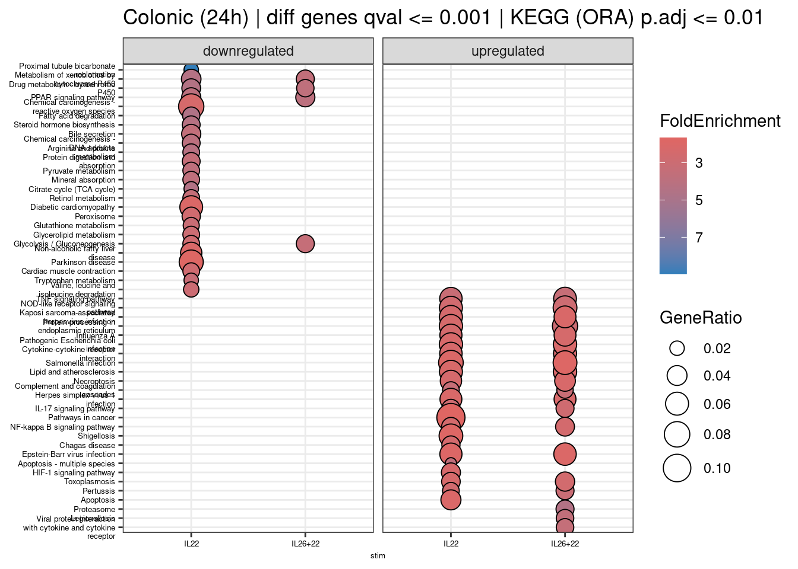
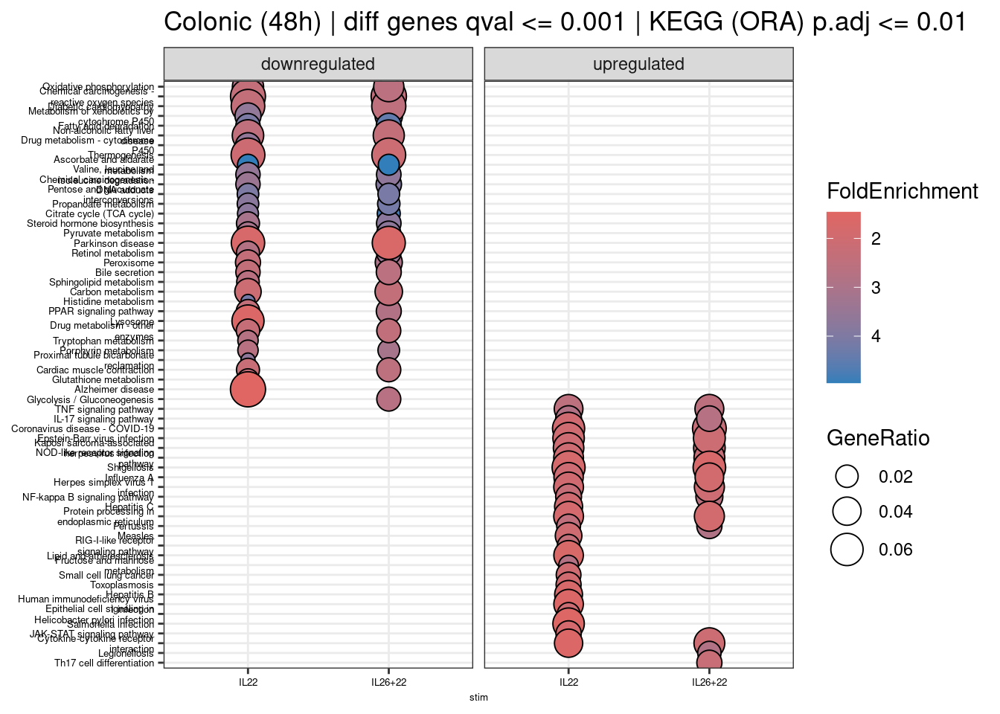
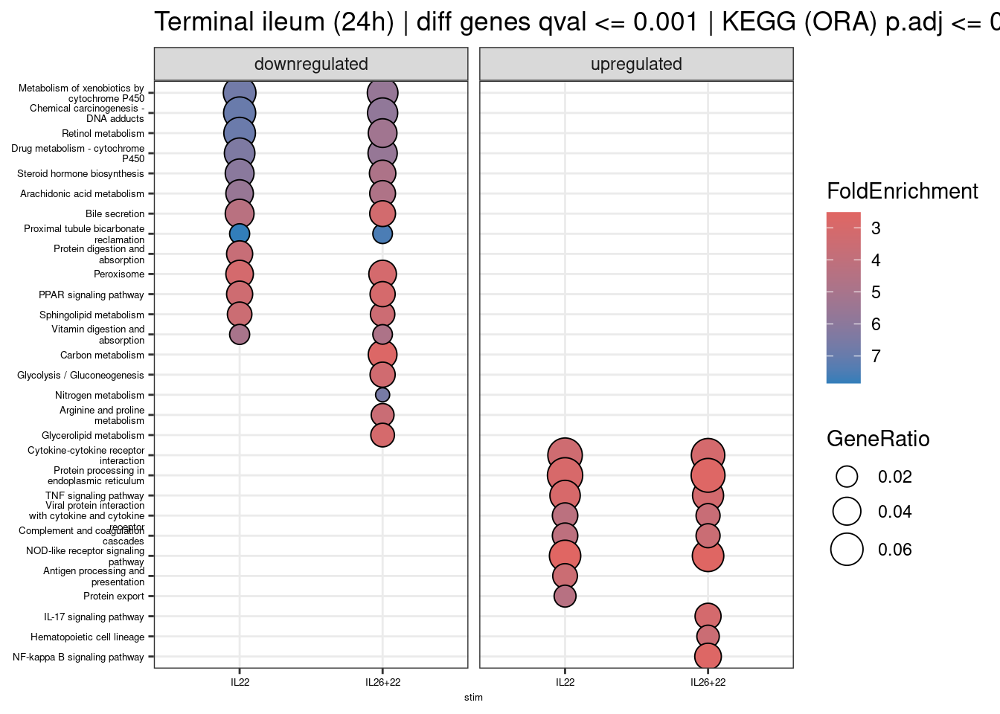
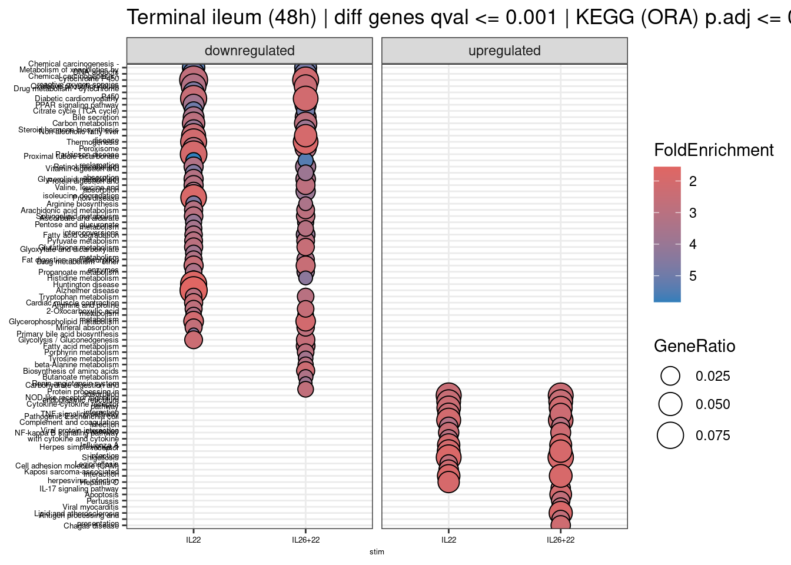

<!DOCTYPE html>
<html xmlns="http://www.w3.org/1999/xhtml" lang="en" xml:lang="en"><head>

<meta charset="utf-8">
<meta name="generator" content="quarto-1.9.31">

<meta name="viewport" content="width=device-width, initial-scale=1.0, user-scalable=yes">


<title>9. Biological themes classification and the enrichment analysis - continued</title>
<style>
/* Default styles provided by pandoc.
** See https://pandoc.org/MANUAL.html#variables-for-html for config info.
*/
code{white-space: pre-wrap;}
span.smallcaps{font-variant: small-caps;}
div.columns{display: flex; gap: min(4vw, 1.5em);}
div.column{flex: auto; overflow-x: auto;}
div.hanging-indent{margin-left: 1.5em; text-indent: -1.5em;}
ul.task-list{list-style: none;}
ul.task-list li input[type="checkbox"] {
  width: 0.8em;
  margin: 0 0.8em 0.2em -1em; /* quarto-specific, see https://github.com/quarto-dev/quarto-cli/issues/4556 */ 
  vertical-align: middle;
}
/* CSS for syntax highlighting */
html { -webkit-text-size-adjust: 100%; }
pre > code.sourceCode { white-space: pre; position: relative; }
pre > code.sourceCode > span { display: inline-block; line-height: 1.25; }
pre > code.sourceCode > span:empty { height: 1.2em; }
.sourceCode { overflow: visible; }
code.sourceCode > span { color: inherit; text-decoration: inherit; }
div.sourceCode { margin: 1em 0; }
pre.sourceCode { margin: 0; }
@media screen {
div.sourceCode { overflow: auto; }
}
@media print {
pre > code.sourceCode { white-space: pre-wrap; }
pre > code.sourceCode > span { text-indent: -5em; padding-left: 5em; }
}
pre.numberSource code
  { counter-reset: source-line 0; }
pre.numberSource code > span
  { position: relative; left: -4em; counter-increment: source-line; }
pre.numberSource code > span > a:first-child::before
  { content: counter(source-line);
    position: relative; left: -1em; text-align: right; vertical-align: baseline;
    border: none; display: inline-block;
    -webkit-touch-callout: none; -webkit-user-select: none;
    -khtml-user-select: none; -moz-user-select: none;
    -ms-user-select: none; user-select: none;
    padding: 0 4px; width: 4em;
  }
pre.numberSource { margin-left: 3em;  padding-left: 4px; }
div.sourceCode
  {   }
@media screen {
pre > code.sourceCode > span > a:first-child::before { text-decoration: underline; }
}
</style>


<script src="09_clusterprofiler_files/libs/clipboard/clipboard.min.js"></script>
<script src="09_clusterprofiler_files/libs/quarto-html/quarto.js" type="module"></script>
<script src="09_clusterprofiler_files/libs/quarto-html/tabsets/tabsets.js" type="module"></script>
<script src="09_clusterprofiler_files/libs/quarto-html/popper.min.js"></script>
<script src="09_clusterprofiler_files/libs/quarto-html/tippy.umd.min.js"></script>
<script src="09_clusterprofiler_files/libs/quarto-html/anchor.min.js"></script>
<link href="09_clusterprofiler_files/libs/quarto-html/tippy.css" rel="stylesheet">
<link href="09_clusterprofiler_files/libs/quarto-html/quarto-syntax-highlighting-7c69b197886ae2a34062761d21e44731.css" rel="stylesheet" id="quarto-text-highlighting-styles">
<script src="09_clusterprofiler_files/libs/bootstrap/bootstrap.min.js"></script>
<link href="09_clusterprofiler_files/libs/bootstrap/bootstrap-icons.css" rel="stylesheet">
<link href="09_clusterprofiler_files/libs/bootstrap/bootstrap-8bd2ffaa1338207a03e6f5740c61cdb5.min.css" rel="stylesheet" append-hash="true" id="quarto-bootstrap" data-mode="light">


</head>

<body class="fullcontent quarto-light">

<div id="quarto-content" class="page-columns page-rows-contents page-layout-article">

<main class="content" id="quarto-document-content">

<header id="title-block-header" class="quarto-title-block default">
<div class="quarto-title">
<h1 class="title">9. Biological themes classification and the enrichment analysis - continued</h1>
</div>


<div class="quarto-title-meta">

    
  
    
  </div>
  


</header>


<p>V Chong | vanessa.chong@rdm.ox.ac.uk | 14 January 2026</p>
<section id="preamble" class="level1">
<h1>Preamble</h1>
<ul>
<li>Bulk RNAseq samples from healthy, patient-derived organoids of the colon and terminal ileum (TI).</li>
<li>Libraries were prepared and sequenced in several batches.</li>
<li>Organoids were stimulated with IL22 only, both IL22 and IL26, or IL26 only. Controls were unstimulated.</li>
<li>Stimulation was performed for 24 or 48 hours.</li>
</ul>
<section id="points-of-note" class="level2">
<h2 class="anchored" data-anchor-id="points-of-note">Points-of-note</h2>
<ul>
<li>Samples are spread across several batches, with two technical replicates (<code>_T1</code> and <code>_T2</code>) per donor i.e.&nbsp;same RNA, sampled twice to make libraries for sequencing.</li>
</ul>
</section>
</section>
<section id="analysis" class="level1">
<h1>Analysis</h1>
<ul>
<li><p>Previous multi-condition and pairwise differential expression between each IL stimulation vs control.</p></li>
<li><p><a href="https://doi.org/10.1089/omi.2011.01"><strong>clusterProfiler</strong></a> biological themes classification and the enrichment analysis to compare effects between IL22 stimulation and IL22+IL26 co-stimulation.</p></li>
</ul>
<section id="excerpt-from-the-clusterprofiler-cookbook" class="level2">
<h2 class="anchored" data-anchor-id="excerpt-from-the-clusterprofiler-cookbook">Excerpt from the <a href="https://yulab-smu.top/biomedical-knowledge-mining-book/index.html"><strong>clusterProfiler</strong> cookbook</a>:</h2>
<ul>
<li><p><em>Over Representation Analysis (ORA) (Boyle et al.&nbsp;2004) is a widely used approach to determine whether known biological functions or processes are over-represented (= enriched) in an experimentally-derived gene list, e.g.&nbsp;a list of differentially expressed genes (DEGs).</em></p></li>
<li><p><em>A common approach to analyzing gene expression profiles is identifying differentially expressed genes that are deemed interesting. The ORA enrichment analysis is based on these differentially expressed genes. This approach will find genes where the difference is large and will fail where the difference is small, but evidenced in coordinated way in a set of related genes. Gene Set Enrichment Analysis (GSEA) (Subramanian et al.&nbsp;2005) directly addresses this limitation. All genes can be used in GSEA; GSEA aggregates the per gene statistics across genes within a gene set, therefore making it possible to detect situations where all genes in a predefined set change in a small but coordinated way. This is important since it is likely that many relevant phenotypic differences are manifested by small but consistent changes in a set of genes.</em></p></li>
</ul>
</section>
<section id="initialise-r-environment" class="level2">
<h2 class="anchored" data-anchor-id="initialise-r-environment">Initialise R environment</h2>
<div class="cell">
<div class="code-copy-outer-scaffold"><div class="sourceCode cell-code" id="cb1"><pre class="sourceCode r code-with-copy"><code class="sourceCode r"><span id="cb1-1"><a href="#cb1-1" aria-hidden="true" tabindex="-1"></a><span class="do">##### Set libPaths #####</span></span>
<span id="cb1-2"><a href="#cb1-2" aria-hidden="true" tabindex="-1"></a><span class="fu">.libPaths</span>(<span class="fu">c</span>(<span class="st">"/home/chongmorrison/R/x86_64-pc-linux-gnu-library/4.5"</span>,</span>
<span id="cb1-3"><a href="#cb1-3" aria-hidden="true" tabindex="-1"></a>            <span class="st">"/home/chongmorrison/R/4.5.0-Bioc3.21"</span>))</span>
<span id="cb1-4"><a href="#cb1-4" aria-hidden="true" tabindex="-1"></a><span class="fu">.libPaths</span>() <span class="co"># check .libPaths</span></span></code></pre></div><button title="Copy to Clipboard" class="code-copy-button"><i class="bi"></i></button></div>
<div class="cell-output cell-output-stdout">
<pre><code>[1] "/home/chongmorrison/R/x86_64-pc-linux-gnu-library/4.5"
[2] "/home/chongmorrison/R/4.5.0-Bioc3.21"                 
[3] "/usr/local/lib/R/site-library"                        
[4] "/usr/lib/R/site-library"                              
[5] "/usr/lib/R/library"                                   </code></pre>
</div>
<div class="code-copy-outer-scaffold"><div class="sourceCode cell-code" id="cb3"><pre class="sourceCode r code-with-copy"><code class="sourceCode r"><span id="cb3-1"><a href="#cb3-1" aria-hidden="true" tabindex="-1"></a><span class="do">##### Memory/parallel cores usage #####</span></span>
<span id="cb3-2"><a href="#cb3-2" aria-hidden="true" tabindex="-1"></a><span class="fu">options</span>(<span class="at">Ncpus =</span> <span class="dv">12</span>) <span class="co"># adjust no. of cores for base R</span></span>
<span id="cb3-3"><a href="#cb3-3" aria-hidden="true" tabindex="-1"></a><span class="fu">getOption</span>(<span class="st">"Ncpus"</span>, <span class="dv">1</span>L)</span></code></pre></div><button title="Copy to Clipboard" class="code-copy-button"><i class="bi"></i></button></div>
<div class="cell-output cell-output-stdout">
<pre><code>[1] 12</code></pre>
</div>
<div class="code-copy-outer-scaffold"><div class="sourceCode cell-code" id="cb5"><pre class="sourceCode r code-with-copy"><code class="sourceCode r"><span id="cb5-1"><a href="#cb5-1" aria-hidden="true" tabindex="-1"></a><span class="do">##### Import all required packages #####</span></span>
<span id="cb5-2"><a href="#cb5-2" aria-hidden="true" tabindex="-1"></a><span class="co"># data-wrangling and plots</span></span>
<span id="cb5-3"><a href="#cb5-3" aria-hidden="true" tabindex="-1"></a><span class="fu">library</span>(tidyverse)</span>
<span id="cb5-4"><a href="#cb5-4" aria-hidden="true" tabindex="-1"></a><span class="fu">library</span>(RColorBrewer)</span>
<span id="cb5-5"><a href="#cb5-5" aria-hidden="true" tabindex="-1"></a><span class="fu">library</span>(viridis)</span>
<span id="cb5-6"><a href="#cb5-6" aria-hidden="true" tabindex="-1"></a><span class="fu">library</span>(ggpubr)</span>
<span id="cb5-7"><a href="#cb5-7" aria-hidden="true" tabindex="-1"></a><span class="co">#library(SummarizedExperiment)</span></span>
<span id="cb5-8"><a href="#cb5-8" aria-hidden="true" tabindex="-1"></a><span class="fu">library</span>(dittoSeq)</span>
<span id="cb5-9"><a href="#cb5-9" aria-hidden="true" tabindex="-1"></a><span class="co"># analysis</span></span>
<span id="cb5-10"><a href="#cb5-10" aria-hidden="true" tabindex="-1"></a><span class="fu">library</span>(sleuth)</span>
<span id="cb5-11"><a href="#cb5-11" aria-hidden="true" tabindex="-1"></a><span class="fu">library</span>(clusterProfiler)</span>
<span id="cb5-12"><a href="#cb5-12" aria-hidden="true" tabindex="-1"></a><span class="fu">library</span>(enrichplot)</span>
<span id="cb5-13"><a href="#cb5-13" aria-hidden="true" tabindex="-1"></a><span class="fu">library</span>(rbioapi)</span>
<span id="cb5-14"><a href="#cb5-14" aria-hidden="true" tabindex="-1"></a><span class="co"># to cite packages</span></span>
<span id="cb5-15"><a href="#cb5-15" aria-hidden="true" tabindex="-1"></a><span class="fu">library</span>(grateful)</span>
<span id="cb5-16"><a href="#cb5-16" aria-hidden="true" tabindex="-1"></a></span>
<span id="cb5-17"><a href="#cb5-17" aria-hidden="true" tabindex="-1"></a><span class="do">##### Set seed for reproducibility of random sampling #####</span></span>
<span id="cb5-18"><a href="#cb5-18" aria-hidden="true" tabindex="-1"></a><span class="fu">set.seed</span>(<span class="dv">584</span>)</span></code></pre></div><button title="Copy to Clipboard" class="code-copy-button"><i class="bi"></i></button></div>
</div>
</section>
<section id="import-differential-expression-gene-lists---pairwise" class="level2">
<h2 class="anchored" data-anchor-id="import-differential-expression-gene-lists---pairwise">Import differential expression gene lists - pairwise</h2>
<p>To get as “clean” results as possible for downstream analyses, the same parameters were employed for all differential expression:</p>
<ul>
<li><code>sleuth_lrt</code> Likelihood Ratio test, accounting for <code>donor</code> differences</li>
<li><code>sleuth_results</code> with <code>pval_aggregate = FALSE</code> to extract transcript-level results</li>
<li><code>qval &lt;= 0.05</code> filter for differentially-expressed transcripts</li>
</ul>
<p>These imported tables below have an additional <code>mean_log2FC</code> column. These were obtained by testing the <code>full</code> model with Wald test (WT) to compute <code>b</code> beta values, which approximates the <code>log2FC</code> per transcript between conditions, and then summarising (<code>mean</code>) these values on a per <code>ens_gene</code> basis.</p>
<p><strong>Colonic</strong></p>
<div class="cell">
<div class="code-copy-outer-scaffold"><div class="sourceCode cell-code" id="cb6"><pre class="sourceCode r code-with-copy"><code class="sourceCode r"><span id="cb6-1"><a href="#cb6-1" aria-hidden="true" tabindex="-1"></a><span class="co"># IL22 only vs control - 24h</span></span>
<span id="cb6-2"><a href="#cb6-2" aria-hidden="true" tabindex="-1"></a>CO.<span class="fl">24.</span>il22 <span class="ot">&lt;-</span> <span class="fu">read.csv</span>(<span class="at">file =</span> <span class="st">"./outputs/07_diffexp_sleuth-genes-qval005_IL22-ctl_colonic-24h.csv"</span>, <span class="at">header =</span> <span class="cn">TRUE</span>)</span>
<span id="cb6-3"><a href="#cb6-3" aria-hidden="true" tabindex="-1"></a><span class="co"># IL22+26 vs control - 24h</span></span>
<span id="cb6-4"><a href="#cb6-4" aria-hidden="true" tabindex="-1"></a>CO.<span class="fl">24.</span>il26<span class="fl">.22</span> <span class="ot">&lt;-</span> <span class="fu">read.csv</span>(<span class="at">file =</span> <span class="st">"./outputs/07_diffexp_sleuth-genes-qval005_IL22+26-ctl_colonic-24h.csv"</span>, <span class="at">header =</span> <span class="cn">TRUE</span>)</span>
<span id="cb6-5"><a href="#cb6-5" aria-hidden="true" tabindex="-1"></a><span class="co"># IL26 only vs control - 24h</span></span>
<span id="cb6-6"><a href="#cb6-6" aria-hidden="true" tabindex="-1"></a><span class="co">#CO.24.il26 &lt;- read.csv(file = "./outputs/07_diffexp_sleuth-genes-qval005_IL26-ctl_colonic-24h.csv", header = TRUE)</span></span>
<span id="cb6-7"><a href="#cb6-7" aria-hidden="true" tabindex="-1"></a></span>
<span id="cb6-8"><a href="#cb6-8" aria-hidden="true" tabindex="-1"></a><span class="co"># IL22 only vs control - 48h</span></span>
<span id="cb6-9"><a href="#cb6-9" aria-hidden="true" tabindex="-1"></a>CO.<span class="fl">48.</span>il22 <span class="ot">&lt;-</span> <span class="fu">read.csv</span>(<span class="at">file =</span> <span class="st">"./outputs/07_diffexp_sleuth-genes-qval005_IL22-ctl_colonic-48h.csv"</span>, <span class="at">header =</span> <span class="cn">TRUE</span>)</span>
<span id="cb6-10"><a href="#cb6-10" aria-hidden="true" tabindex="-1"></a><span class="co"># IL22+26 vs control - 48h</span></span>
<span id="cb6-11"><a href="#cb6-11" aria-hidden="true" tabindex="-1"></a>CO.<span class="fl">48.</span>il26<span class="fl">.22</span> <span class="ot">&lt;-</span> <span class="fu">read.csv</span>(<span class="at">file =</span> <span class="st">"./outputs/07_diffexp_sleuth-genes-qval005_IL22+26-ctl_colonic-48h.csv"</span>, <span class="at">header =</span> <span class="cn">TRUE</span>)</span>
<span id="cb6-12"><a href="#cb6-12" aria-hidden="true" tabindex="-1"></a><span class="co"># IL26 only vs control - 48h</span></span>
<span id="cb6-13"><a href="#cb6-13" aria-hidden="true" tabindex="-1"></a><span class="co">#CO.48.il26 &lt;- read.csv(file = "./outputs/07_diffexp_sleuth-genes-qval005_IL26-ctl_colonic-48h.csv", header = TRUE)</span></span></code></pre></div><button title="Copy to Clipboard" class="code-copy-button"><i class="bi"></i></button></div>
</div>
<p><strong>TI</strong></p>
<div class="cell">
<div class="code-copy-outer-scaffold"><div class="sourceCode cell-code" id="cb7"><pre class="sourceCode r code-with-copy"><code class="sourceCode r"><span id="cb7-1"><a href="#cb7-1" aria-hidden="true" tabindex="-1"></a><span class="co"># IL22 only vs control - 24h</span></span>
<span id="cb7-2"><a href="#cb7-2" aria-hidden="true" tabindex="-1"></a>TI.<span class="fl">24.</span>il22 <span class="ot">&lt;-</span> <span class="fu">read.csv</span>(<span class="at">file =</span> <span class="st">"./outputs/07_diffexp_sleuth-genes-qval005_IL22-ctl_TI-24h.csv"</span>, <span class="at">header =</span> <span class="cn">TRUE</span>)</span>
<span id="cb7-3"><a href="#cb7-3" aria-hidden="true" tabindex="-1"></a><span class="co"># IL22+26 vs control - 24h</span></span>
<span id="cb7-4"><a href="#cb7-4" aria-hidden="true" tabindex="-1"></a>TI.<span class="fl">24.</span>il26<span class="fl">.22</span> <span class="ot">&lt;-</span> <span class="fu">read.csv</span>(<span class="at">file =</span> <span class="st">"./outputs/07_diffexp_sleuth-genes-qval005_IL22+26-ctl_TI-24h.csv"</span>, <span class="at">header =</span> <span class="cn">TRUE</span>)</span>
<span id="cb7-5"><a href="#cb7-5" aria-hidden="true" tabindex="-1"></a><span class="co"># IL26 only vs control - 24h</span></span>
<span id="cb7-6"><a href="#cb7-6" aria-hidden="true" tabindex="-1"></a><span class="co">#TI.24.il26 &lt;- read.csv(file = "./outputs/07_diffexp_sleuth-genes-qval005_IL26-ctl_TI-24h.csv", header = TRUE)</span></span>
<span id="cb7-7"><a href="#cb7-7" aria-hidden="true" tabindex="-1"></a></span>
<span id="cb7-8"><a href="#cb7-8" aria-hidden="true" tabindex="-1"></a><span class="co"># IL22 only vs control - 48h</span></span>
<span id="cb7-9"><a href="#cb7-9" aria-hidden="true" tabindex="-1"></a>TI.<span class="fl">48.</span>il22 <span class="ot">&lt;-</span> <span class="fu">read.csv</span>(<span class="at">file =</span> <span class="st">"./outputs/07_diffexp_sleuth-genes-qval005_IL22-ctl_TI-48h.csv"</span>, <span class="at">header =</span> <span class="cn">TRUE</span>)</span>
<span id="cb7-10"><a href="#cb7-10" aria-hidden="true" tabindex="-1"></a><span class="co"># IL22+26 vs control - 48h</span></span>
<span id="cb7-11"><a href="#cb7-11" aria-hidden="true" tabindex="-1"></a>TI.<span class="fl">48.</span>il26<span class="fl">.22</span> <span class="ot">&lt;-</span> <span class="fu">read.csv</span>(<span class="at">file =</span> <span class="st">"./outputs/07_diffexp_sleuth-genes-qval005_IL22+26-ctl_TI-48h.csv"</span>, <span class="at">header =</span> <span class="cn">TRUE</span>)</span>
<span id="cb7-12"><a href="#cb7-12" aria-hidden="true" tabindex="-1"></a><span class="co"># IL26 only vs control - 48h</span></span>
<span id="cb7-13"><a href="#cb7-13" aria-hidden="true" tabindex="-1"></a><span class="co">#TI.48.il26 &lt;- read.csv(file = "./outputs/07_diffexp_sleuth-genes-qval005_IL26-ctl_TI-48h.csv", header = TRUE)</span></span></code></pre></div><button title="Copy to Clipboard" class="code-copy-button"><i class="bi"></i></button></div>
</div>
</section>
<section id="over-representation-analysis-ora" class="level2">
<h2 class="anchored" data-anchor-id="over-representation-analysis-ora">Over-representation analysis (ORA)</h2>
<p>ORA based on <a href="https://www.genome.jp/kegg/">KEGG: Kyoto Encyclopedia of Genes and Genomes</a> biological themes classification.</p>
<section id="import-background-genes" class="level3">
<h3 class="anchored" data-anchor-id="import-background-genes">Import background genes</h3>
<p>This should be all <strong>expressed</strong> i.e.&nbsp;<em>filtered</em> transcripts, NOT the entire transcriptome.</p>
<p><strong>Colonic</strong></p>
<div class="cell">
<div class="code-copy-outer-scaffold"><div class="sourceCode cell-code" id="cb8"><pre class="sourceCode r code-with-copy"><code class="sourceCode r"><span id="cb8-1"><a href="#cb8-1" aria-hidden="true" tabindex="-1"></a><span class="co"># IL22 only vs control - 24h</span></span>
<span id="cb8-2"><a href="#cb8-2" aria-hidden="true" tabindex="-1"></a>CO.<span class="fl">24.</span>il22.wt <span class="ot">&lt;-</span> <span class="fu">read.csv</span>(<span class="at">file =</span> <span class="st">"./outputs/05_diffexp_sleuth-transcripts-wt-all_IL22-ctl_colonic-24h.csv"</span>, <span class="at">header =</span> <span class="cn">TRUE</span>)</span>
<span id="cb8-3"><a href="#cb8-3" aria-hidden="true" tabindex="-1"></a><span class="co"># IL22+26 vs control - 24h</span></span>
<span id="cb8-4"><a href="#cb8-4" aria-hidden="true" tabindex="-1"></a>CO.<span class="fl">24.</span>il26.<span class="fl">22.</span>wt <span class="ot">&lt;-</span> <span class="fu">read.csv</span>(<span class="at">file =</span> <span class="st">"./outputs/05_diffexp_sleuth-transcripts-wt-all_IL22+26-ctl_colonic-24h.csv"</span>, <span class="at">header =</span> <span class="cn">TRUE</span>)</span>
<span id="cb8-5"><a href="#cb8-5" aria-hidden="true" tabindex="-1"></a><span class="co"># IL26 only vs control - 24h</span></span>
<span id="cb8-6"><a href="#cb8-6" aria-hidden="true" tabindex="-1"></a><span class="co">#CO.24.il26.wt &lt;- read.csv(file = "./outputs/05_diffexp_sleuth-transcripts-wt-all_IL26-ctl_colonic-24h.csv", header = TRUE)</span></span>
<span id="cb8-7"><a href="#cb8-7" aria-hidden="true" tabindex="-1"></a></span>
<span id="cb8-8"><a href="#cb8-8" aria-hidden="true" tabindex="-1"></a><span class="co"># IL22 only vs control - 48h</span></span>
<span id="cb8-9"><a href="#cb8-9" aria-hidden="true" tabindex="-1"></a>CO.<span class="fl">48.</span>il22.wt <span class="ot">&lt;-</span> <span class="fu">read.csv</span>(<span class="at">file =</span> <span class="st">"./outputs/05_diffexp_sleuth-transcripts-wt-all_IL22-ctl_colonic-48h.csv"</span>, <span class="at">header =</span> <span class="cn">TRUE</span>)</span>
<span id="cb8-10"><a href="#cb8-10" aria-hidden="true" tabindex="-1"></a><span class="co"># IL22+26 vs control - 48h</span></span>
<span id="cb8-11"><a href="#cb8-11" aria-hidden="true" tabindex="-1"></a>CO.<span class="fl">48.</span>il26.<span class="fl">22.</span>wt <span class="ot">&lt;-</span> <span class="fu">read.csv</span>(<span class="at">file =</span> <span class="st">"./outputs/05_diffexp_sleuth-transcripts-wt-all_IL22+26-ctl_colonic-48h.csv"</span>, <span class="at">header =</span> <span class="cn">TRUE</span>)</span>
<span id="cb8-12"><a href="#cb8-12" aria-hidden="true" tabindex="-1"></a><span class="co"># IL26 only vs control - 48h</span></span>
<span id="cb8-13"><a href="#cb8-13" aria-hidden="true" tabindex="-1"></a><span class="co">#CO.48.il26.wt &lt;- read.csv(file = "./outputs/05_diffexp_sleuth-transcripts-wt-all_IL26-ctl_colonic-48h.csv", header = TRUE)</span></span></code></pre></div><button title="Copy to Clipboard" class="code-copy-button"><i class="bi"></i></button></div>
</div>
<div class="cell">
<div class="code-copy-outer-scaffold"><div class="sourceCode cell-code" id="cb9"><pre class="sourceCode r code-with-copy"><code class="sourceCode r"><span id="cb9-1"><a href="#cb9-1" aria-hidden="true" tabindex="-1"></a>CO.<span class="fl">24.</span>bg.genes <span class="ot">&lt;-</span> <span class="fu">unique</span>(<span class="fu">c</span>(CO.<span class="fl">24.</span>il22.wt<span class="sc">$</span>ext_gene, CO.<span class="fl">24.</span>il26.<span class="fl">22.</span>wt<span class="sc">$</span>ext_gene))</span>
<span id="cb9-2"><a href="#cb9-2" aria-hidden="true" tabindex="-1"></a><span class="fu">length</span>(CO.<span class="fl">24.</span>bg.genes) <span class="co"># 14702 genes</span></span></code></pre></div><button title="Copy to Clipboard" class="code-copy-button"><i class="bi"></i></button></div>
<div class="cell-output cell-output-stdout">
<pre><code>[1] 14702</code></pre>
</div>
<div class="code-copy-outer-scaffold"><div class="sourceCode cell-code" id="cb11"><pre class="sourceCode r code-with-copy"><code class="sourceCode r"><span id="cb11-1"><a href="#cb11-1" aria-hidden="true" tabindex="-1"></a>CO.<span class="fl">48.</span>bg.genes <span class="ot">&lt;-</span> <span class="fu">unique</span>(<span class="fu">c</span>(CO.<span class="fl">48.</span>il22.wt<span class="sc">$</span>ext_gene, CO.<span class="fl">48.</span>il26.<span class="fl">22.</span>wt<span class="sc">$</span>ext_gene))</span>
<span id="cb11-2"><a href="#cb11-2" aria-hidden="true" tabindex="-1"></a><span class="fu">length</span>(CO.<span class="fl">48.</span>bg.genes) <span class="co"># 15436 genes</span></span></code></pre></div><button title="Copy to Clipboard" class="code-copy-button"><i class="bi"></i></button></div>
<div class="cell-output cell-output-stdout">
<pre><code>[1] 15436</code></pre>
</div>
</div>
<p>Convert to Entrez ID using <code>bitr()</code> utility included in <strong>clusterProfiler</strong>.</p>
<div class="cell">
<div class="code-copy-outer-scaffold"><div class="sourceCode cell-code" id="cb13"><pre class="sourceCode r code-with-copy"><code class="sourceCode r"><span id="cb13-1"><a href="#cb13-1" aria-hidden="true" tabindex="-1"></a>CO.<span class="fl">24.</span>bg.genes <span class="ot">&lt;-</span> <span class="fu">bitr</span>(CO.<span class="fl">24.</span>bg.genes, <span class="at">fromType =</span> <span class="st">"SYMBOL"</span>, <span class="at">toType =</span> <span class="st">"ENTREZID"</span>, <span class="at">OrgDb =</span> <span class="st">"org.Hs.eg.db"</span>)</span></code></pre></div><button title="Copy to Clipboard" class="code-copy-button"><i class="bi"></i></button></div>
<div class="cell-output cell-output-stderr">
<pre><code></code></pre>
</div>
<div class="cell-output cell-output-stderr">
<pre><code>'select()' returned 1:many mapping between keys and columns</code></pre>
</div>
<div class="cell-output cell-output-stderr">
<pre><code>Warning in bitr(CO.24.bg.genes, fromType = "SYMBOL", toType = "ENTREZID", :
0.02% of input gene IDs are fail to map...</code></pre>
</div>
<div class="code-copy-outer-scaffold"><div class="sourceCode cell-code" id="cb17"><pre class="sourceCode r code-with-copy"><code class="sourceCode r"><span id="cb17-1"><a href="#cb17-1" aria-hidden="true" tabindex="-1"></a><span class="fu">head</span>(CO.<span class="fl">24.</span>bg.genes)</span></code></pre></div><button title="Copy to Clipboard" class="code-copy-button"><i class="bi"></i></button></div>
<div class="cell-output cell-output-stdout">
<pre><code>    SYMBOL ENTREZID
1    NCOA7   135112
2 SERPINA1     5265
3     LRG1   116844
4  LURAP1L   286343
5   SPINK1     6690
6    DMBT1     1755</code></pre>
</div>
<div class="code-copy-outer-scaffold"><div class="sourceCode cell-code" id="cb19"><pre class="sourceCode r code-with-copy"><code class="sourceCode r"><span id="cb19-1"><a href="#cb19-1" aria-hidden="true" tabindex="-1"></a>CO.<span class="fl">48.</span>bg.genes <span class="ot">&lt;-</span> <span class="fu">bitr</span>(CO.<span class="fl">48.</span>bg.genes, <span class="at">fromType =</span> <span class="st">"SYMBOL"</span>, <span class="at">toType =</span> <span class="st">"ENTREZID"</span>, <span class="at">OrgDb =</span> <span class="st">"org.Hs.eg.db"</span>)</span></code></pre></div><button title="Copy to Clipboard" class="code-copy-button"><i class="bi"></i></button></div>
<div class="cell-output cell-output-stderr">
<pre><code>'select()' returned 1:many mapping between keys and columns</code></pre>
</div>
<div class="cell-output cell-output-stderr">
<pre><code>Warning in bitr(CO.48.bg.genes, fromType = "SYMBOL", toType = "ENTREZID", :
0.02% of input gene IDs are fail to map...</code></pre>
</div>
<div class="code-copy-outer-scaffold"><div class="sourceCode cell-code" id="cb22"><pre class="sourceCode r code-with-copy"><code class="sourceCode r"><span id="cb22-1"><a href="#cb22-1" aria-hidden="true" tabindex="-1"></a><span class="fu">head</span>(CO.<span class="fl">48.</span>bg.genes)</span></code></pre></div><button title="Copy to Clipboard" class="code-copy-button"><i class="bi"></i></button></div>
<div class="cell-output cell-output-stdout">
<pre><code>  SYMBOL ENTREZID
1     SI     6476
2 IFITM1     8519
3   LRG1   116844
4  DMBT1     1755
5   LCN2     3934
6   TGM2     7052</code></pre>
</div>
</div>
<p><strong>TI</strong></p>
<div class="cell">
<div class="code-copy-outer-scaffold"><div class="sourceCode cell-code" id="cb24"><pre class="sourceCode r code-with-copy"><code class="sourceCode r"><span id="cb24-1"><a href="#cb24-1" aria-hidden="true" tabindex="-1"></a><span class="co"># IL22 only vs control - 24h</span></span>
<span id="cb24-2"><a href="#cb24-2" aria-hidden="true" tabindex="-1"></a>TI.<span class="fl">24.</span>il22.wt <span class="ot">&lt;-</span> <span class="fu">read.csv</span>(<span class="at">file =</span> <span class="st">"./outputs/05_diffexp_sleuth-transcripts-wt-all_IL22-ctl_TI-24h.csv"</span>, <span class="at">header =</span> <span class="cn">TRUE</span>)</span>
<span id="cb24-3"><a href="#cb24-3" aria-hidden="true" tabindex="-1"></a><span class="co"># IL22+26 vs control - 24h</span></span>
<span id="cb24-4"><a href="#cb24-4" aria-hidden="true" tabindex="-1"></a>TI.<span class="fl">24.</span>il26.<span class="fl">22.</span>wt <span class="ot">&lt;-</span> <span class="fu">read.csv</span>(<span class="at">file =</span> <span class="st">"./outputs/05_diffexp_sleuth-transcripts-wt-all_IL22+26-ctl_TI-24h.csv"</span>, <span class="at">header =</span> <span class="cn">TRUE</span>)</span>
<span id="cb24-5"><a href="#cb24-5" aria-hidden="true" tabindex="-1"></a><span class="co"># IL26 only vs control - 24h</span></span>
<span id="cb24-6"><a href="#cb24-6" aria-hidden="true" tabindex="-1"></a><span class="co">#TI.24.il26.wt &lt;- read.csv(file = "./outputs/05_diffexp_sleuth-transcripts-wt-all_IL26-ctl_TI-24h.csv", header = TRUE)</span></span>
<span id="cb24-7"><a href="#cb24-7" aria-hidden="true" tabindex="-1"></a></span>
<span id="cb24-8"><a href="#cb24-8" aria-hidden="true" tabindex="-1"></a><span class="co"># IL22 only vs control - 48h</span></span>
<span id="cb24-9"><a href="#cb24-9" aria-hidden="true" tabindex="-1"></a>TI.<span class="fl">48.</span>il22.wt <span class="ot">&lt;-</span> <span class="fu">read.csv</span>(<span class="at">file =</span> <span class="st">"./outputs/05_diffexp_sleuth-transcripts-wt-all_IL22-ctl_TI-48h.csv"</span>, <span class="at">header =</span> <span class="cn">TRUE</span>)</span>
<span id="cb24-10"><a href="#cb24-10" aria-hidden="true" tabindex="-1"></a><span class="co"># IL22+26 vs control - 48h</span></span>
<span id="cb24-11"><a href="#cb24-11" aria-hidden="true" tabindex="-1"></a>TI.<span class="fl">48.</span>il26.<span class="fl">22.</span>wt <span class="ot">&lt;-</span> <span class="fu">read.csv</span>(<span class="at">file =</span> <span class="st">"./outputs/05_diffexp_sleuth-transcripts-wt-all_IL22+26-ctl_TI-48h.csv"</span>, <span class="at">header =</span> <span class="cn">TRUE</span>)</span>
<span id="cb24-12"><a href="#cb24-12" aria-hidden="true" tabindex="-1"></a><span class="co"># IL26 only vs control - 48h</span></span>
<span id="cb24-13"><a href="#cb24-13" aria-hidden="true" tabindex="-1"></a><span class="co">#TI.48.il26.wt &lt;- read.csv(file = "./outputs/05_diffexp_sleuth-transcripts-wt-all_IL26-ctl_TI-48h.csv", header = TRUE)</span></span></code></pre></div><button title="Copy to Clipboard" class="code-copy-button"><i class="bi"></i></button></div>
</div>
<div class="cell">
<div class="code-copy-outer-scaffold"><div class="sourceCode cell-code" id="cb25"><pre class="sourceCode r code-with-copy"><code class="sourceCode r"><span id="cb25-1"><a href="#cb25-1" aria-hidden="true" tabindex="-1"></a>TI.<span class="fl">24.</span>bg.genes <span class="ot">&lt;-</span> <span class="fu">unique</span>(<span class="fu">c</span>(TI.<span class="fl">24.</span>il22.wt<span class="sc">$</span>ext_gene, TI.<span class="fl">24.</span>il26.<span class="fl">22.</span>wt<span class="sc">$</span>ext_gene))</span>
<span id="cb25-2"><a href="#cb25-2" aria-hidden="true" tabindex="-1"></a><span class="fu">length</span>(TI.<span class="fl">24.</span>bg.genes) <span class="co"># 14273 genes</span></span></code></pre></div><button title="Copy to Clipboard" class="code-copy-button"><i class="bi"></i></button></div>
<div class="cell-output cell-output-stdout">
<pre><code>[1] 14273</code></pre>
</div>
<div class="code-copy-outer-scaffold"><div class="sourceCode cell-code" id="cb27"><pre class="sourceCode r code-with-copy"><code class="sourceCode r"><span id="cb27-1"><a href="#cb27-1" aria-hidden="true" tabindex="-1"></a>TI.<span class="fl">48.</span>bg.genes <span class="ot">&lt;-</span> <span class="fu">unique</span>(<span class="fu">c</span>(TI.<span class="fl">48.</span>il22.wt<span class="sc">$</span>ext_gene, TI.<span class="fl">48.</span>il26.<span class="fl">22.</span>wt<span class="sc">$</span>ext_gene))</span>
<span id="cb27-2"><a href="#cb27-2" aria-hidden="true" tabindex="-1"></a><span class="fu">length</span>(TI.<span class="fl">48.</span>bg.genes) <span class="co"># 14502 genes</span></span></code></pre></div><button title="Copy to Clipboard" class="code-copy-button"><i class="bi"></i></button></div>
<div class="cell-output cell-output-stdout">
<pre><code>[1] 14502</code></pre>
</div>
</div>
<p>Convert to Entrez ID using <code>bitr()</code> utility included in <strong>clusterProfiler</strong>.</p>
<div class="cell">
<div class="code-copy-outer-scaffold"><div class="sourceCode cell-code" id="cb29"><pre class="sourceCode r code-with-copy"><code class="sourceCode r"><span id="cb29-1"><a href="#cb29-1" aria-hidden="true" tabindex="-1"></a>TI.<span class="fl">24.</span>bg.genes <span class="ot">&lt;-</span> <span class="fu">bitr</span>(TI.<span class="fl">24.</span>bg.genes, <span class="at">fromType =</span> <span class="st">"SYMBOL"</span>, <span class="at">toType =</span> <span class="st">"ENTREZID"</span>, <span class="at">OrgDb =</span> <span class="st">"org.Hs.eg.db"</span>)</span></code></pre></div><button title="Copy to Clipboard" class="code-copy-button"><i class="bi"></i></button></div>
<div class="cell-output cell-output-stderr">
<pre><code>'select()' returned 1:many mapping between keys and columns</code></pre>
</div>
<div class="cell-output cell-output-stderr">
<pre><code>Warning in bitr(TI.24.bg.genes, fromType = "SYMBOL", toType = "ENTREZID", :
0.02% of input gene IDs are fail to map...</code></pre>
</div>
<div class="code-copy-outer-scaffold"><div class="sourceCode cell-code" id="cb32"><pre class="sourceCode r code-with-copy"><code class="sourceCode r"><span id="cb32-1"><a href="#cb32-1" aria-hidden="true" tabindex="-1"></a><span class="fu">head</span>(TI.<span class="fl">24.</span>bg.genes)</span></code></pre></div><button title="Copy to Clipboard" class="code-copy-button"><i class="bi"></i></button></div>
<div class="cell-output cell-output-stdout">
<pre><code>  SYMBOL ENTREZID
1 SPINK1     6690
2 IFITM3    10410
3 UNC5CL   222643
4  DMBT1     1755
5   CPS1     1373
6  GOLM1    51280</code></pre>
</div>
<div class="code-copy-outer-scaffold"><div class="sourceCode cell-code" id="cb34"><pre class="sourceCode r code-with-copy"><code class="sourceCode r"><span id="cb34-1"><a href="#cb34-1" aria-hidden="true" tabindex="-1"></a>TI.<span class="fl">48.</span>bg.genes <span class="ot">&lt;-</span> <span class="fu">bitr</span>(TI.<span class="fl">48.</span>bg.genes, <span class="at">fromType =</span> <span class="st">"SYMBOL"</span>, <span class="at">toType =</span> <span class="st">"ENTREZID"</span>, <span class="at">OrgDb =</span> <span class="st">"org.Hs.eg.db"</span>)</span></code></pre></div><button title="Copy to Clipboard" class="code-copy-button"><i class="bi"></i></button></div>
<div class="cell-output cell-output-stderr">
<pre><code>'select()' returned 1:many mapping between keys and columns</code></pre>
</div>
<div class="cell-output cell-output-stderr">
<pre><code>Warning in bitr(TI.48.bg.genes, fromType = "SYMBOL", toType = "ENTREZID", :
0.02% of input gene IDs are fail to map...</code></pre>
</div>
<div class="code-copy-outer-scaffold"><div class="sourceCode cell-code" id="cb37"><pre class="sourceCode r code-with-copy"><code class="sourceCode r"><span id="cb37-1"><a href="#cb37-1" aria-hidden="true" tabindex="-1"></a><span class="fu">head</span>(TI.<span class="fl">48.</span>bg.genes)</span></code></pre></div><button title="Copy to Clipboard" class="code-copy-button"><i class="bi"></i></button></div>
<div class="cell-output cell-output-stdout">
<pre><code>  SYMBOL ENTREZID
1 SPINK1     6690
2  DMBT1     1755
3  REG1B     5968
4  REG1A     5967
5   TGM2     7052
6    CFB      629</code></pre>
</div>
</div>
</section>
<section id="visualise-enriched-pathways" class="level3">
<h3 class="anchored" data-anchor-id="visualise-enriched-pathways">Visualise enriched pathways</h3>
<p>For all datasets, split gene lists into up- and down-regulated.</p>
<p><strong>Colonic - 24h</strong></p>
<div class="cell">
<div class="code-copy-outer-scaffold"><div class="sourceCode cell-code" id="cb39"><pre class="sourceCode r code-with-copy"><code class="sourceCode r"><span id="cb39-1"><a href="#cb39-1" aria-hidden="true" tabindex="-1"></a><span class="co"># IL22 only vs control</span></span>
<span id="cb39-2"><a href="#cb39-2" aria-hidden="true" tabindex="-1"></a>CO.<span class="fl">24.</span>il22.up <span class="ot">&lt;-</span> CO.<span class="fl">24.</span>il22[CO.<span class="fl">24.</span>il22<span class="sc">$</span>mean_log2FC <span class="sc">&gt;</span> <span class="dv">0</span>, ]</span>
<span id="cb39-3"><a href="#cb39-3" aria-hidden="true" tabindex="-1"></a>CO.<span class="fl">24.</span>il22.dn <span class="ot">&lt;-</span> CO.<span class="fl">24.</span>il22[CO.<span class="fl">24.</span>il22<span class="sc">$</span>mean_log2FC <span class="sc">&lt;</span> <span class="dv">0</span>, ]</span>
<span id="cb39-4"><a href="#cb39-4" aria-hidden="true" tabindex="-1"></a></span>
<span id="cb39-5"><a href="#cb39-5" aria-hidden="true" tabindex="-1"></a><span class="co"># IL22+26 vs control</span></span>
<span id="cb39-6"><a href="#cb39-6" aria-hidden="true" tabindex="-1"></a>CO.<span class="fl">24.</span>il26.<span class="fl">22.</span>up <span class="ot">&lt;-</span> CO.<span class="fl">24.</span>il26<span class="fl">.22</span>[CO.<span class="fl">24.</span>il26<span class="fl">.22</span><span class="sc">$</span>mean_log2FC <span class="sc">&gt;</span> <span class="dv">0</span>, ]</span>
<span id="cb39-7"><a href="#cb39-7" aria-hidden="true" tabindex="-1"></a>CO.<span class="fl">24.</span>il26.<span class="fl">22.</span>dn <span class="ot">&lt;-</span> CO.<span class="fl">24.</span>il26<span class="fl">.22</span>[CO.<span class="fl">24.</span>il26<span class="fl">.22</span><span class="sc">$</span>mean_log2FC <span class="sc">&lt;</span> <span class="dv">0</span>, ]</span>
<span id="cb39-8"><a href="#cb39-8" aria-hidden="true" tabindex="-1"></a></span>
<span id="cb39-9"><a href="#cb39-9" aria-hidden="true" tabindex="-1"></a><span class="co"># sanity check</span></span>
<span id="cb39-10"><a href="#cb39-10" aria-hidden="true" tabindex="-1"></a><span class="fu">length</span>(<span class="fu">unique</span>(CO.<span class="fl">24.</span>il22.up<span class="sc">$</span>ext_gene)) <span class="sc">+</span> <span class="fu">length</span>(<span class="fu">unique</span>(CO.<span class="fl">24.</span>il22.dn<span class="sc">$</span>ext_gene)) <span class="co"># 4429 genes (some duplicate gene symbols)</span></span></code></pre></div><button title="Copy to Clipboard" class="code-copy-button"><i class="bi"></i></button></div>
<div class="cell-output cell-output-stdout">
<pre><code>[1] 4429</code></pre>
</div>
<div class="code-copy-outer-scaffold"><div class="sourceCode cell-code" id="cb41"><pre class="sourceCode r code-with-copy"><code class="sourceCode r"><span id="cb41-1"><a href="#cb41-1" aria-hidden="true" tabindex="-1"></a><span class="fu">length</span>(<span class="fu">unique</span>(CO.<span class="fl">24.</span>il26.<span class="fl">22.</span>up<span class="sc">$</span>ext_gene)) <span class="sc">+</span> <span class="fu">length</span>(<span class="fu">unique</span>(CO.<span class="fl">24.</span>il26.<span class="fl">22.</span>dn<span class="sc">$</span>ext_gene)) <span class="co"># 5045 genes (some duplicate gene symbols)</span></span></code></pre></div><button title="Copy to Clipboard" class="code-copy-button"><i class="bi"></i></button></div>
<div class="cell-output cell-output-stdout">
<pre><code>[1] 5045</code></pre>
</div>
</div>
<div class="cell">
<div class="code-copy-outer-scaffold"><div class="sourceCode cell-code" id="cb43"><pre class="sourceCode r code-with-copy"><code class="sourceCode r"><span id="cb43-1"><a href="#cb43-1" aria-hidden="true" tabindex="-1"></a><span class="co"># Filter to top ~900 hits with `qval &lt;= 0.001`.</span></span>
<span id="cb43-2"><a href="#cb43-2" aria-hidden="true" tabindex="-1"></a></span>
<span id="cb43-3"><a href="#cb43-3" aria-hidden="true" tabindex="-1"></a><span class="do">## IL22 only vs control</span></span>
<span id="cb43-4"><a href="#cb43-4" aria-hidden="true" tabindex="-1"></a>CO.<span class="fl">24.</span>il22.up <span class="ot">&lt;-</span> dplyr<span class="sc">::</span><span class="fu">filter</span>(CO.<span class="fl">24.</span>il22.up, qval <span class="sc">&lt;=</span> <span class="fl">0.001</span>)</span>
<span id="cb43-5"><a href="#cb43-5" aria-hidden="true" tabindex="-1"></a>CO.<span class="fl">24.</span>il22.up <span class="ot">&lt;-</span> <span class="fu">unique</span>(CO.<span class="fl">24.</span>il22.up<span class="sc">$</span>ext_gene)</span>
<span id="cb43-6"><a href="#cb43-6" aria-hidden="true" tabindex="-1"></a><span class="fu">length</span>(CO.<span class="fl">24.</span>il22.up)</span></code></pre></div><button title="Copy to Clipboard" class="code-copy-button"><i class="bi"></i></button></div>
<div class="cell-output cell-output-stdout">
<pre><code>[1] 953</code></pre>
</div>
<div class="code-copy-outer-scaffold"><div class="sourceCode cell-code" id="cb45"><pre class="sourceCode r code-with-copy"><code class="sourceCode r"><span id="cb45-1"><a href="#cb45-1" aria-hidden="true" tabindex="-1"></a>CO.<span class="fl">24.</span>il22.dn <span class="ot">&lt;-</span> dplyr<span class="sc">::</span><span class="fu">filter</span>(CO.<span class="fl">24.</span>il22.dn, qval <span class="sc">&lt;=</span> <span class="fl">0.001</span>)</span>
<span id="cb45-2"><a href="#cb45-2" aria-hidden="true" tabindex="-1"></a>CO.<span class="fl">24.</span>il22.dn <span class="ot">&lt;-</span> <span class="fu">unique</span>(CO.<span class="fl">24.</span>il22.dn<span class="sc">$</span>ext_gene)</span>
<span id="cb45-3"><a href="#cb45-3" aria-hidden="true" tabindex="-1"></a><span class="fu">length</span>(CO.<span class="fl">24.</span>il22.dn)</span></code></pre></div><button title="Copy to Clipboard" class="code-copy-button"><i class="bi"></i></button></div>
<div class="cell-output cell-output-stdout">
<pre><code>[1] 918</code></pre>
</div>
<div class="code-copy-outer-scaffold"><div class="sourceCode cell-code" id="cb47"><pre class="sourceCode r code-with-copy"><code class="sourceCode r"><span id="cb47-1"><a href="#cb47-1" aria-hidden="true" tabindex="-1"></a><span class="do">## IL22+26 vs control</span></span>
<span id="cb47-2"><a href="#cb47-2" aria-hidden="true" tabindex="-1"></a>CO.<span class="fl">24.</span>il26.<span class="fl">22.</span>up <span class="ot">&lt;-</span> dplyr<span class="sc">::</span><span class="fu">filter</span>(CO.<span class="fl">24.</span>il26.<span class="fl">22.</span>up, qval <span class="sc">&lt;=</span> <span class="fl">0.001</span>)</span>
<span id="cb47-3"><a href="#cb47-3" aria-hidden="true" tabindex="-1"></a>CO.<span class="fl">24.</span>il26.<span class="fl">22.</span>up <span class="ot">&lt;-</span> <span class="fu">unique</span>(CO.<span class="fl">24.</span>il26.<span class="fl">22.</span>up<span class="sc">$</span>ext_gene)</span>
<span id="cb47-4"><a href="#cb47-4" aria-hidden="true" tabindex="-1"></a><span class="fu">length</span>(CO.<span class="fl">24.</span>il26.<span class="fl">22.</span>up)</span></code></pre></div><button title="Copy to Clipboard" class="code-copy-button"><i class="bi"></i></button></div>
<div class="cell-output cell-output-stdout">
<pre><code>[1] 954</code></pre>
</div>
<div class="code-copy-outer-scaffold"><div class="sourceCode cell-code" id="cb49"><pre class="sourceCode r code-with-copy"><code class="sourceCode r"><span id="cb49-1"><a href="#cb49-1" aria-hidden="true" tabindex="-1"></a>CO.<span class="fl">24.</span>il26.<span class="fl">22.</span>dn <span class="ot">&lt;-</span> dplyr<span class="sc">::</span><span class="fu">filter</span>(CO.<span class="fl">24.</span>il26.<span class="fl">22.</span>dn, qval <span class="sc">&lt;=</span> <span class="fl">0.001</span>)</span>
<span id="cb49-2"><a href="#cb49-2" aria-hidden="true" tabindex="-1"></a>CO.<span class="fl">24.</span>il26.<span class="fl">22.</span>dn <span class="ot">&lt;-</span> <span class="fu">unique</span>(CO.<span class="fl">24.</span>il26.<span class="fl">22.</span>dn<span class="sc">$</span>ext_gene)</span>
<span id="cb49-3"><a href="#cb49-3" aria-hidden="true" tabindex="-1"></a><span class="fu">length</span>(CO.<span class="fl">24.</span>il26.<span class="fl">22.</span>dn)</span></code></pre></div><button title="Copy to Clipboard" class="code-copy-button"><i class="bi"></i></button></div>
<div class="cell-output cell-output-stdout">
<pre><code>[1] 809</code></pre>
</div>
</div>
<div class="cell">
<div class="code-copy-outer-scaffold"><div class="sourceCode cell-code" id="cb51"><pre class="sourceCode r code-with-copy"><code class="sourceCode r"><span id="cb51-1"><a href="#cb51-1" aria-hidden="true" tabindex="-1"></a><span class="co"># Convert to Entrez ID using `bitr()` utility with **clusterProfiler**.</span></span>
<span id="cb51-2"><a href="#cb51-2" aria-hidden="true" tabindex="-1"></a></span>
<span id="cb51-3"><a href="#cb51-3" aria-hidden="true" tabindex="-1"></a><span class="do">## IL22 only vs control</span></span>
<span id="cb51-4"><a href="#cb51-4" aria-hidden="true" tabindex="-1"></a>CO.<span class="fl">24.</span>il22.up <span class="ot">&lt;-</span> <span class="fu">bitr</span>(CO.<span class="fl">24.</span>il22.up, <span class="at">fromType =</span> <span class="st">"SYMBOL"</span>, <span class="at">toType =</span> <span class="st">"ENTREZID"</span>, <span class="at">OrgDb =</span> <span class="st">"org.Hs.eg.db"</span>)</span></code></pre></div><button title="Copy to Clipboard" class="code-copy-button"><i class="bi"></i></button></div>
<div class="cell-output cell-output-stderr">
<pre><code>'select()' returned 1:1 mapping between keys and columns</code></pre>
</div>
<div class="cell-output cell-output-stderr">
<pre><code>Warning in bitr(CO.24.il22.up, fromType = "SYMBOL", toType = "ENTREZID", : 0.1%
of input gene IDs are fail to map...</code></pre>
</div>
<div class="code-copy-outer-scaffold"><div class="sourceCode cell-code" id="cb54"><pre class="sourceCode r code-with-copy"><code class="sourceCode r"><span id="cb54-1"><a href="#cb54-1" aria-hidden="true" tabindex="-1"></a><span class="fu">head</span>(CO.<span class="fl">24.</span>il22.up)</span></code></pre></div><button title="Copy to Clipboard" class="code-copy-button"><i class="bi"></i></button></div>
<div class="cell-output cell-output-stdout">
<pre><code>    SYMBOL ENTREZID
1    DMBT1     1755
2 SERPINA1     5265
3  CEACAM1      634
4 SERPINA3       12
5    C4BPB      725
6  CEACAM5     1048</code></pre>
</div>
<div class="code-copy-outer-scaffold"><div class="sourceCode cell-code" id="cb56"><pre class="sourceCode r code-with-copy"><code class="sourceCode r"><span id="cb56-1"><a href="#cb56-1" aria-hidden="true" tabindex="-1"></a>CO.<span class="fl">24.</span>il22.dn <span class="ot">&lt;-</span> <span class="fu">bitr</span>(CO.<span class="fl">24.</span>il22.dn, <span class="at">fromType =</span> <span class="st">"SYMBOL"</span>, <span class="at">toType =</span> <span class="st">"ENTREZID"</span>, <span class="at">OrgDb =</span> <span class="st">"org.Hs.eg.db"</span>)</span></code></pre></div><button title="Copy to Clipboard" class="code-copy-button"><i class="bi"></i></button></div>
<div class="cell-output cell-output-stderr">
<pre><code>'select()' returned 1:1 mapping between keys and columns</code></pre>
</div>
<div class="cell-output cell-output-stderr">
<pre><code>Warning in bitr(CO.24.il22.dn, fromType = "SYMBOL", toType = "ENTREZID", :
0.11% of input gene IDs are fail to map...</code></pre>
</div>
<div class="code-copy-outer-scaffold"><div class="sourceCode cell-code" id="cb59"><pre class="sourceCode r code-with-copy"><code class="sourceCode r"><span id="cb59-1"><a href="#cb59-1" aria-hidden="true" tabindex="-1"></a><span class="fu">head</span>(CO.<span class="fl">24.</span>il22.dn)</span></code></pre></div><button title="Copy to Clipboard" class="code-copy-button"><i class="bi"></i></button></div>
<div class="cell-output cell-output-stdout">
<pre><code>   SYMBOL ENTREZID
1   ABCG2     9429
2     CKB     1152
3    LMO4     8543
4   PDCD4    27250
5 B3GALT5    10317
6 SLC11A2     4891</code></pre>
</div>
<div class="code-copy-outer-scaffold"><div class="sourceCode cell-code" id="cb61"><pre class="sourceCode r code-with-copy"><code class="sourceCode r"><span id="cb61-1"><a href="#cb61-1" aria-hidden="true" tabindex="-1"></a><span class="do">## IL22+26 vs control</span></span>
<span id="cb61-2"><a href="#cb61-2" aria-hidden="true" tabindex="-1"></a>CO.<span class="fl">24.</span>il26.<span class="fl">22.</span>up  <span class="ot">&lt;-</span> <span class="fu">bitr</span>(CO.<span class="fl">24.</span>il26.<span class="fl">22.</span>up , <span class="at">fromType =</span> <span class="st">"SYMBOL"</span>, <span class="at">toType =</span> <span class="st">"ENTREZID"</span>, <span class="at">OrgDb =</span> <span class="st">"org.Hs.eg.db"</span>)</span></code></pre></div><button title="Copy to Clipboard" class="code-copy-button"><i class="bi"></i></button></div>
<div class="cell-output cell-output-stderr">
<pre><code>'select()' returned 1:1 mapping between keys and columns</code></pre>
</div>
<div class="cell-output cell-output-stderr">
<pre><code>Warning in bitr(CO.24.il26.22.up, fromType = "SYMBOL", toType = "ENTREZID", :
0.1% of input gene IDs are fail to map...</code></pre>
</div>
<div class="code-copy-outer-scaffold"><div class="sourceCode cell-code" id="cb64"><pre class="sourceCode r code-with-copy"><code class="sourceCode r"><span id="cb64-1"><a href="#cb64-1" aria-hidden="true" tabindex="-1"></a><span class="fu">head</span>(CO.<span class="fl">24.</span>il26.<span class="fl">22.</span>up )</span></code></pre></div><button title="Copy to Clipboard" class="code-copy-button"><i class="bi"></i></button></div>
<div class="cell-output cell-output-stdout">
<pre><code>    SYMBOL ENTREZID
1    DMBT1     1755
2 SERPINA1     5265
3  CEACAM1      634
4    C4BPB      725
5 SERPINA3       12
6      CFI     3426</code></pre>
</div>
<div class="code-copy-outer-scaffold"><div class="sourceCode cell-code" id="cb66"><pre class="sourceCode r code-with-copy"><code class="sourceCode r"><span id="cb66-1"><a href="#cb66-1" aria-hidden="true" tabindex="-1"></a>CO.<span class="fl">24.</span>il26.<span class="fl">22.</span>dn <span class="ot">&lt;-</span> <span class="fu">bitr</span>(CO.<span class="fl">24.</span>il26.<span class="fl">22.</span>dn, <span class="at">fromType =</span> <span class="st">"SYMBOL"</span>, <span class="at">toType =</span> <span class="st">"ENTREZID"</span>, <span class="at">OrgDb =</span> <span class="st">"org.Hs.eg.db"</span>)</span></code></pre></div><button title="Copy to Clipboard" class="code-copy-button"><i class="bi"></i></button></div>
<div class="cell-output cell-output-stderr">
<pre><code>'select()' returned 1:1 mapping between keys and columns</code></pre>
</div>
<div class="cell-output cell-output-stderr">
<pre><code>Warning in bitr(CO.24.il26.22.dn, fromType = "SYMBOL", toType = "ENTREZID", :
0.12% of input gene IDs are fail to map...</code></pre>
</div>
<div class="code-copy-outer-scaffold"><div class="sourceCode cell-code" id="cb69"><pre class="sourceCode r code-with-copy"><code class="sourceCode r"><span id="cb69-1"><a href="#cb69-1" aria-hidden="true" tabindex="-1"></a><span class="fu">head</span>(CO.<span class="fl">24.</span>il26.<span class="fl">22.</span>dn)</span></code></pre></div><button title="Copy to Clipboard" class="code-copy-button"><i class="bi"></i></button></div>
<div class="cell-output cell-output-stdout">
<pre><code>   SYMBOL ENTREZID
1   FXYD3     5349
2   PDCD4    27250
3  LGALS3     3958
4     CKB     1152
5   ABCG2     9429
6 SLC11A2     4891</code></pre>
</div>
</div>
<p>Formula interface of <code>compareCluster</code> to compare gene lists. The gene lists need to be compiled into one dataframe.</p>
<div class="cell">
<div class="code-copy-outer-scaffold"><div class="sourceCode cell-code" id="cb71"><pre class="sourceCode r code-with-copy"><code class="sourceCode r"><span id="cb71-1"><a href="#cb71-1" aria-hidden="true" tabindex="-1"></a>CO.<span class="fl">24.</span>il22.up <span class="ot">&lt;-</span> CO.<span class="fl">24.</span>il22.up <span class="sc">%&gt;%</span> <span class="fu">mutate</span> (<span class="at">DE =</span> <span class="st">"upregulated"</span>, <span class="at">stim =</span> <span class="st">"IL22"</span>)</span>
<span id="cb71-2"><a href="#cb71-2" aria-hidden="true" tabindex="-1"></a>CO.<span class="fl">24.</span>il22.dn <span class="ot">&lt;-</span> CO.<span class="fl">24.</span>il22.dn <span class="sc">%&gt;%</span> <span class="fu">mutate</span> (<span class="at">DE =</span> <span class="st">"downregulated"</span>, <span class="at">stim =</span> <span class="st">"IL22"</span>)</span>
<span id="cb71-3"><a href="#cb71-3" aria-hidden="true" tabindex="-1"></a>CO.<span class="fl">24.</span>il26.<span class="fl">22.</span>up <span class="ot">&lt;-</span> CO.<span class="fl">24.</span>il26.<span class="fl">22.</span>up <span class="sc">%&gt;%</span> <span class="fu">mutate</span> (<span class="at">DE =</span> <span class="st">"upregulated"</span>, <span class="at">stim =</span> <span class="st">"IL26+22"</span>)</span>
<span id="cb71-4"><a href="#cb71-4" aria-hidden="true" tabindex="-1"></a>CO.<span class="fl">24.</span>il26.<span class="fl">22.</span>dn <span class="ot">&lt;-</span> CO.<span class="fl">24.</span>il26.<span class="fl">22.</span>dn <span class="sc">%&gt;%</span> <span class="fu">mutate</span> (<span class="at">DE =</span> <span class="st">"downregulated"</span>, <span class="at">stim =</span> <span class="st">"IL26+22"</span>)</span>
<span id="cb71-5"><a href="#cb71-5" aria-hidden="true" tabindex="-1"></a></span>
<span id="cb71-6"><a href="#cb71-6" aria-hidden="true" tabindex="-1"></a>CO.<span class="fl">24.</span>compare.df <span class="ot">&lt;-</span> <span class="fu">bind_rows</span>(CO.<span class="fl">24.</span>il22.up, CO.<span class="fl">24.</span>il22.dn, CO.<span class="fl">24.</span>il26.<span class="fl">22.</span>up, CO.<span class="fl">24.</span>il26.<span class="fl">22.</span>dn)</span></code></pre></div><button title="Copy to Clipboard" class="code-copy-button"><i class="bi"></i></button></div>
</div>
<div class="cell">
<div class="code-copy-outer-scaffold"><div class="sourceCode cell-code" id="cb72"><pre class="sourceCode r code-with-copy"><code class="sourceCode r"><span id="cb72-1"><a href="#cb72-1" aria-hidden="true" tabindex="-1"></a>CO.<span class="fl">24.</span>formula.kegg <span class="ot">&lt;-</span> <span class="fu">compareCluster</span>(ENTREZID<span class="sc">~</span>DE<span class="sc">+</span>stim, <span class="at">data =</span> CO.<span class="fl">24.</span>compare.df, </span>
<span id="cb72-2"><a href="#cb72-2" aria-hidden="true" tabindex="-1"></a>                                     <span class="at">fun =</span> <span class="st">"enrichKEGG"</span>, <span class="at">universe =</span> CO.<span class="fl">24.</span>bg.genes<span class="sc">$</span>ENTREZID,</span>
<span id="cb72-3"><a href="#cb72-3" aria-hidden="true" tabindex="-1"></a>                                     <span class="at">organism =</span> <span class="st">"hsa"</span>, <span class="at">pvalueCutoff =</span> <span class="fl">0.01</span>, <span class="at">pAdjustMethod =</span> <span class="st">"BH"</span>, <span class="at">qvalueCutoff =</span> <span class="fl">0.2</span>)</span>
<span id="cb72-4"><a href="#cb72-4" aria-hidden="true" tabindex="-1"></a><span class="fu">head</span>(CO.<span class="fl">24.</span>formula.kegg)</span></code></pre></div><button title="Copy to Clipboard" class="code-copy-button"><i class="bi"></i></button></div>
<div class="cell-output cell-output-stdout">
<pre><code>             Cluster            DE stim           category
1 downregulated.IL22 downregulated IL22 Organismal Systems
2 downregulated.IL22 downregulated IL22         Metabolism
3 downregulated.IL22 downregulated IL22         Metabolism
4 downregulated.IL22 downregulated IL22 Organismal Systems
5 downregulated.IL22 downregulated IL22     Human Diseases
6 downregulated.IL22 downregulated IL22         Metabolism
                                subcategory       ID
1                          Excretory system hsa04964
2 Xenobiotics biodegradation and metabolism hsa00980
3 Xenobiotics biodegradation and metabolism hsa00982
4                          Endocrine system hsa03320
5                          Cancer: overview hsa05208
6                          Lipid metabolism hsa00071
                                        Description GeneRatio  BgRatio
1           Proximal tubule bicarbonate reclamation    10/498  14/6246
2      Metabolism of xenobiotics by cytochrome P450    19/498  54/6246
3                 Drug metabolism - cytochrome P450    17/498  48/6246
4                            PPAR signaling pathway    18/498  57/6246
5 Chemical carcinogenesis - reactive oxygen species    39/498 208/6246
6                            Fatty acid degradation    14/498  38/6246
  RichFactor FoldEnrichment   zScore       pvalue     p.adjust       qvalue
1  0.7142857       8.958692 8.774341 7.116081e-09 2.088239e-06 1.803950e-06
2  0.3518519       4.412985 7.413757 1.269446e-08 2.088239e-06 1.803950e-06
3  0.3541667       4.442018 7.045803 6.718920e-08 7.368416e-06 6.365293e-06
4  0.3157895       3.960685 6.609093 2.064694e-07 1.698211e-05 1.467020e-05
5  0.1875000       2.351657 5.835445 2.858054e-07 1.880600e-05 1.624578e-05
6  0.3684211       4.620799 6.589354 5.652336e-07 3.099364e-05 2.677422e-05
                                                                                                                                                                                        geneID
1                                                                                                                                               762/5105/6550/760/4190/476/1468/5106/2744/8671
2                                                                                           9446/29785/1576/1577/2939/873/2948/1645/8574/127/54576/2938/373156/126/54575/54658/246181/221/4259
3                                                                                                       9446/2330/1576/1577/2939/4128/2948/127/54576/2938/373156/4129/126/54575/54658/221/4259
4                                                                                                   3158/5105/8309/2172/1962/1593/51703/10062/6342/5468/5106/10873/5170/30/1374/1376/6256/5467
5 9446/1836/1646/2939/8644/4711/2053/5337/4698/7385/4717/4719/873/2309/515/2948/7386/518/1645/522/7381/4722/3162/2938/1327/4718/5580/4702/5170/292/498/3725/847/4259/7419/9377/1537/27089/7384
6                                                                                                                             10449/3033/1962/113612/51703/127/501/30/223/126/35/1374/1376/219
  Count
1    10
2    19
3    17
4    18
5    39
6    14</code></pre>
</div>
</div>
<div class="cell">
<div class="code-copy-outer-scaffold"><div class="sourceCode cell-code" id="cb74"><pre class="sourceCode r code-with-copy"><code class="sourceCode r"><span id="cb74-1"><a href="#cb74-1" aria-hidden="true" tabindex="-1"></a><span class="fu">dotplot</span>(CO.<span class="fl">24.</span>formula.kegg, <span class="at">showCategory =</span> <span class="dv">100</span>,</span>
<span id="cb74-2"><a href="#cb74-2" aria-hidden="true" tabindex="-1"></a>        <span class="at">x =</span> <span class="st">"stim"</span>, <span class="at">color =</span> <span class="st">"FoldEnrichment"</span>, <span class="at">size =</span> <span class="st">"geneRatio"</span>,</span>
<span id="cb74-3"><a href="#cb74-3" aria-hidden="true" tabindex="-1"></a>        <span class="at">font.size =</span> <span class="dv">5</span>, <span class="at">title =</span> <span class="st">"Colonic (24h) | diff genes qval &lt;= 0.001 | KEGG (ORA) p.adj &lt;= 0.01"</span>) <span class="sc">+</span> <span class="fu">facet_grid</span>(<span class="sc">~</span>DE)</span></code></pre></div><button title="Copy to Clipboard" class="code-copy-button"><i class="bi"></i></button></div>
<div class="cell-output cell-output-stderr">
<pre><code>Warning: `aes_string()` was deprecated in ggplot2 3.0.0.
ℹ Please use tidy evaluation idioms with `aes()`.
ℹ See also `vignette("ggplot2-in-packages")` for more information.
ℹ The deprecated feature was likely used in the enrichplot package.
  Please report the issue at
  &lt;https://github.com/GuangchuangYu/enrichplot/issues&gt;.</code></pre>
</div>
<div class="cell-output-display">
<div>
<figure class="figure">
<p></p>
</figure>
</div>
</div>
<div class="code-copy-outer-scaffold"><div class="sourceCode cell-code" id="cb76"><pre class="sourceCode r code-with-copy"><code class="sourceCode r"><span id="cb76-1"><a href="#cb76-1" aria-hidden="true" tabindex="-1"></a><span class="co"># get data.frame of output with gene symbols instead of ENTREZID</span></span>
<span id="cb76-2"><a href="#cb76-2" aria-hidden="true" tabindex="-1"></a>CO.<span class="fl">24.</span>formula.kegg_df.sym <span class="ot">&lt;-</span> <span class="fu">data.frame</span>(<span class="fu">setReadable</span>(CO.<span class="fl">24.</span>formula.kegg, <span class="at">OrgDb =</span> <span class="st">"org.Hs.eg.db"</span>, <span class="at">keyType=</span><span class="st">"ENTREZID"</span>))</span>
<span id="cb76-3"><a href="#cb76-3" aria-hidden="true" tabindex="-1"></a><span class="co"># get data.frame of output without gene symbols</span></span>
<span id="cb76-4"><a href="#cb76-4" aria-hidden="true" tabindex="-1"></a>CO.<span class="fl">24.</span>formula.kegg_df <span class="ot">&lt;-</span> <span class="fu">data.frame</span>(CO.<span class="fl">24.</span>formula.kegg)</span>
<span id="cb76-5"><a href="#cb76-5" aria-hidden="true" tabindex="-1"></a><span class="co">#write.csv(CO.24.formula.kegg_df.sym, file = "./outputs/09_KEGG_colonic-24h.csv", quote = FALSE, row.names = FALSE)</span></span>
<span id="cb76-6"><a href="#cb76-6" aria-hidden="true" tabindex="-1"></a><span class="co">#write.csv(CO.24.formula.kegg_df, file = "./outputs/09_KEGG_colonic-24h-ENTREZID.csv", quote = FALSE, row.names = FALSE)</span></span></code></pre></div><button title="Copy to Clipboard" class="code-copy-button"><i class="bi"></i></button></div>
</div>
<p><strong>Colonic - 48h</strong></p>
<div class="cell">
<div class="code-copy-outer-scaffold"><div class="sourceCode cell-code" id="cb77"><pre class="sourceCode r code-with-copy"><code class="sourceCode r"><span id="cb77-1"><a href="#cb77-1" aria-hidden="true" tabindex="-1"></a><span class="co"># IL22 only vs control</span></span>
<span id="cb77-2"><a href="#cb77-2" aria-hidden="true" tabindex="-1"></a>CO.<span class="fl">48.</span>il22.up <span class="ot">&lt;-</span> CO.<span class="fl">48.</span>il22[CO.<span class="fl">48.</span>il22<span class="sc">$</span>mean_log2FC <span class="sc">&gt;</span> <span class="dv">0</span>, ]</span>
<span id="cb77-3"><a href="#cb77-3" aria-hidden="true" tabindex="-1"></a>CO.<span class="fl">48.</span>il22.dn <span class="ot">&lt;-</span> CO.<span class="fl">48.</span>il22[CO.<span class="fl">48.</span>il22<span class="sc">$</span>mean_log2FC <span class="sc">&lt;</span> <span class="dv">0</span>, ]</span>
<span id="cb77-4"><a href="#cb77-4" aria-hidden="true" tabindex="-1"></a></span>
<span id="cb77-5"><a href="#cb77-5" aria-hidden="true" tabindex="-1"></a><span class="co"># IL22+26 vs control</span></span>
<span id="cb77-6"><a href="#cb77-6" aria-hidden="true" tabindex="-1"></a>CO.<span class="fl">48.</span>il26.<span class="fl">22.</span>up <span class="ot">&lt;-</span> CO.<span class="fl">48.</span>il26<span class="fl">.22</span>[CO.<span class="fl">48.</span>il26<span class="fl">.22</span><span class="sc">$</span>mean_log2FC <span class="sc">&gt;</span> <span class="dv">0</span>, ]</span>
<span id="cb77-7"><a href="#cb77-7" aria-hidden="true" tabindex="-1"></a>CO.<span class="fl">48.</span>il26.<span class="fl">22.</span>dn <span class="ot">&lt;-</span> CO.<span class="fl">48.</span>il26<span class="fl">.22</span>[CO.<span class="fl">48.</span>il26<span class="fl">.22</span><span class="sc">$</span>mean_log2FC <span class="sc">&lt;</span> <span class="dv">0</span>, ]</span>
<span id="cb77-8"><a href="#cb77-8" aria-hidden="true" tabindex="-1"></a></span>
<span id="cb77-9"><a href="#cb77-9" aria-hidden="true" tabindex="-1"></a><span class="co"># sanity check</span></span>
<span id="cb77-10"><a href="#cb77-10" aria-hidden="true" tabindex="-1"></a><span class="fu">length</span>(<span class="fu">unique</span>(CO.<span class="fl">48.</span>il22.up<span class="sc">$</span>ext_gene)) <span class="sc">+</span> <span class="fu">length</span>(<span class="fu">unique</span>(CO.<span class="fl">48.</span>il22.dn<span class="sc">$</span>ext_gene)) <span class="co"># 8609 genes (some duplicate gene symbols)</span></span></code></pre></div><button title="Copy to Clipboard" class="code-copy-button"><i class="bi"></i></button></div>
<div class="cell-output cell-output-stdout">
<pre><code>[1] 8609</code></pre>
</div>
<div class="code-copy-outer-scaffold"><div class="sourceCode cell-code" id="cb79"><pre class="sourceCode r code-with-copy"><code class="sourceCode r"><span id="cb79-1"><a href="#cb79-1" aria-hidden="true" tabindex="-1"></a><span class="fu">length</span>(<span class="fu">unique</span>(CO.<span class="fl">48.</span>il26.<span class="fl">22.</span>up<span class="sc">$</span>ext_gene)) <span class="sc">+</span> <span class="fu">length</span>(<span class="fu">unique</span>(CO.<span class="fl">48.</span>il26.<span class="fl">22.</span>dn<span class="sc">$</span>ext_gene)) <span class="co"># 7134 genes (some duplicate gene symbols)</span></span></code></pre></div><button title="Copy to Clipboard" class="code-copy-button"><i class="bi"></i></button></div>
<div class="cell-output cell-output-stdout">
<pre><code>[1] 7134</code></pre>
</div>
</div>
<div class="cell">
<div class="code-copy-outer-scaffold"><div class="sourceCode cell-code" id="cb81"><pre class="sourceCode r code-with-copy"><code class="sourceCode r"><span id="cb81-1"><a href="#cb81-1" aria-hidden="true" tabindex="-1"></a><span class="co"># Filter to top ~1000 hits with `qval &lt;= 0.001`.</span></span>
<span id="cb81-2"><a href="#cb81-2" aria-hidden="true" tabindex="-1"></a></span>
<span id="cb81-3"><a href="#cb81-3" aria-hidden="true" tabindex="-1"></a><span class="do">## IL22 only vs control</span></span>
<span id="cb81-4"><a href="#cb81-4" aria-hidden="true" tabindex="-1"></a>CO.<span class="fl">48.</span>il22.up <span class="ot">&lt;-</span> dplyr<span class="sc">::</span><span class="fu">filter</span>(CO.<span class="fl">48.</span>il22.up, qval <span class="sc">&lt;=</span> <span class="fl">0.001</span>)</span>
<span id="cb81-5"><a href="#cb81-5" aria-hidden="true" tabindex="-1"></a>CO.<span class="fl">48.</span>il22.up <span class="ot">&lt;-</span> <span class="fu">unique</span>(CO.<span class="fl">48.</span>il22.up<span class="sc">$</span>ext_gene)</span>
<span id="cb81-6"><a href="#cb81-6" aria-hidden="true" tabindex="-1"></a><span class="fu">length</span>(CO.<span class="fl">48.</span>il22.up)</span></code></pre></div><button title="Copy to Clipboard" class="code-copy-button"><i class="bi"></i></button></div>
<div class="cell-output cell-output-stdout">
<pre><code>[1] 1966</code></pre>
</div>
<div class="code-copy-outer-scaffold"><div class="sourceCode cell-code" id="cb83"><pre class="sourceCode r code-with-copy"><code class="sourceCode r"><span id="cb83-1"><a href="#cb83-1" aria-hidden="true" tabindex="-1"></a>CO.<span class="fl">48.</span>il22.dn <span class="ot">&lt;-</span> dplyr<span class="sc">::</span><span class="fu">filter</span>(CO.<span class="fl">48.</span>il22.dn, qval <span class="sc">&lt;=</span> <span class="fl">0.001</span>)</span>
<span id="cb83-2"><a href="#cb83-2" aria-hidden="true" tabindex="-1"></a>CO.<span class="fl">48.</span>il22.dn <span class="ot">&lt;-</span> <span class="fu">unique</span>(CO.<span class="fl">48.</span>il22.dn<span class="sc">$</span>ext_gene)</span>
<span id="cb83-3"><a href="#cb83-3" aria-hidden="true" tabindex="-1"></a><span class="fu">length</span>(CO.<span class="fl">48.</span>il22.dn)</span></code></pre></div><button title="Copy to Clipboard" class="code-copy-button"><i class="bi"></i></button></div>
<div class="cell-output cell-output-stdout">
<pre><code>[1] 1727</code></pre>
</div>
<div class="code-copy-outer-scaffold"><div class="sourceCode cell-code" id="cb85"><pre class="sourceCode r code-with-copy"><code class="sourceCode r"><span id="cb85-1"><a href="#cb85-1" aria-hidden="true" tabindex="-1"></a><span class="do">## IL22+26 vs control</span></span>
<span id="cb85-2"><a href="#cb85-2" aria-hidden="true" tabindex="-1"></a>CO.<span class="fl">48.</span>il26.<span class="fl">22.</span>up <span class="ot">&lt;-</span> dplyr<span class="sc">::</span><span class="fu">filter</span>(CO.<span class="fl">48.</span>il26.<span class="fl">22.</span>up, qval <span class="sc">&lt;=</span> <span class="fl">0.001</span>)</span>
<span id="cb85-3"><a href="#cb85-3" aria-hidden="true" tabindex="-1"></a>CO.<span class="fl">48.</span>il26.<span class="fl">22.</span>up <span class="ot">&lt;-</span> <span class="fu">unique</span>(CO.<span class="fl">48.</span>il26.<span class="fl">22.</span>up<span class="sc">$</span>ext_gene)</span>
<span id="cb85-4"><a href="#cb85-4" aria-hidden="true" tabindex="-1"></a><span class="fu">length</span>(CO.<span class="fl">48.</span>il26.<span class="fl">22.</span>up)</span></code></pre></div><button title="Copy to Clipboard" class="code-copy-button"><i class="bi"></i></button></div>
<div class="cell-output cell-output-stdout">
<pre><code>[1] 1374</code></pre>
</div>
<div class="code-copy-outer-scaffold"><div class="sourceCode cell-code" id="cb87"><pre class="sourceCode r code-with-copy"><code class="sourceCode r"><span id="cb87-1"><a href="#cb87-1" aria-hidden="true" tabindex="-1"></a>CO.<span class="fl">48.</span>il26.<span class="fl">22.</span>dn <span class="ot">&lt;-</span> dplyr<span class="sc">::</span><span class="fu">filter</span>(CO.<span class="fl">48.</span>il26.<span class="fl">22.</span>dn, qval <span class="sc">&lt;=</span> <span class="fl">0.001</span>)</span>
<span id="cb87-2"><a href="#cb87-2" aria-hidden="true" tabindex="-1"></a>CO.<span class="fl">48.</span>il26.<span class="fl">22.</span>dn <span class="ot">&lt;-</span> <span class="fu">unique</span>(CO.<span class="fl">48.</span>il26.<span class="fl">22.</span>dn<span class="sc">$</span>ext_gene)</span>
<span id="cb87-3"><a href="#cb87-3" aria-hidden="true" tabindex="-1"></a><span class="fu">length</span>(CO.<span class="fl">48.</span>il26.<span class="fl">22.</span>dn)</span></code></pre></div><button title="Copy to Clipboard" class="code-copy-button"><i class="bi"></i></button></div>
<div class="cell-output cell-output-stdout">
<pre><code>[1] 1282</code></pre>
</div>
</div>
<div class="cell">
<div class="code-copy-outer-scaffold"><div class="sourceCode cell-code" id="cb89"><pre class="sourceCode r code-with-copy"><code class="sourceCode r"><span id="cb89-1"><a href="#cb89-1" aria-hidden="true" tabindex="-1"></a><span class="co"># Convert to Entrez ID using `bitr()` utility with **clusterProfiler**.</span></span>
<span id="cb89-2"><a href="#cb89-2" aria-hidden="true" tabindex="-1"></a></span>
<span id="cb89-3"><a href="#cb89-3" aria-hidden="true" tabindex="-1"></a><span class="do">## IL22 only vs control</span></span>
<span id="cb89-4"><a href="#cb89-4" aria-hidden="true" tabindex="-1"></a>CO.<span class="fl">48.</span>il22.up <span class="ot">&lt;-</span> <span class="fu">bitr</span>(CO.<span class="fl">48.</span>il22.up, <span class="at">fromType =</span> <span class="st">"SYMBOL"</span>, <span class="at">toType =</span> <span class="st">"ENTREZID"</span>, <span class="at">OrgDb =</span> <span class="st">"org.Hs.eg.db"</span>)</span></code></pre></div><button title="Copy to Clipboard" class="code-copy-button"><i class="bi"></i></button></div>
<div class="cell-output cell-output-stderr">
<pre><code>'select()' returned 1:1 mapping between keys and columns</code></pre>
</div>
<div class="cell-output cell-output-stderr">
<pre><code>Warning in bitr(CO.48.il22.up, fromType = "SYMBOL", toType = "ENTREZID", :
0.05% of input gene IDs are fail to map...</code></pre>
</div>
<div class="code-copy-outer-scaffold"><div class="sourceCode cell-code" id="cb92"><pre class="sourceCode r code-with-copy"><code class="sourceCode r"><span id="cb92-1"><a href="#cb92-1" aria-hidden="true" tabindex="-1"></a><span class="fu">head</span>(CO.<span class="fl">48.</span>il22.up)</span></code></pre></div><button title="Copy to Clipboard" class="code-copy-button"><i class="bi"></i></button></div>
<div class="cell-output cell-output-stdout">
<pre><code>    SYMBOL ENTREZID
1    DMBT1     1755
2  CEACAM1      634
3     IL32     9235
4 SERPINA1     5265
5 SERPINA3       12
6     LCN2     3934</code></pre>
</div>
<div class="code-copy-outer-scaffold"><div class="sourceCode cell-code" id="cb94"><pre class="sourceCode r code-with-copy"><code class="sourceCode r"><span id="cb94-1"><a href="#cb94-1" aria-hidden="true" tabindex="-1"></a>CO.<span class="fl">48.</span>il22.dn <span class="ot">&lt;-</span> <span class="fu">bitr</span>(CO.<span class="fl">48.</span>il22.dn, <span class="at">fromType =</span> <span class="st">"SYMBOL"</span>, <span class="at">toType =</span> <span class="st">"ENTREZID"</span>, <span class="at">OrgDb =</span> <span class="st">"org.Hs.eg.db"</span>)</span></code></pre></div><button title="Copy to Clipboard" class="code-copy-button"><i class="bi"></i></button></div>
<div class="cell-output cell-output-stderr">
<pre><code>'select()' returned 1:1 mapping between keys and columns</code></pre>
</div>
<div class="cell-output cell-output-stderr">
<pre><code>Warning in bitr(CO.48.il22.dn, fromType = "SYMBOL", toType = "ENTREZID", :
0.06% of input gene IDs are fail to map...</code></pre>
</div>
<div class="code-copy-outer-scaffold"><div class="sourceCode cell-code" id="cb97"><pre class="sourceCode r code-with-copy"><code class="sourceCode r"><span id="cb97-1"><a href="#cb97-1" aria-hidden="true" tabindex="-1"></a><span class="fu">head</span>(CO.<span class="fl">48.</span>il22.dn)</span></code></pre></div><button title="Copy to Clipboard" class="code-copy-button"><i class="bi"></i></button></div>
<div class="cell-output cell-output-stdout">
<pre><code>   SYMBOL ENTREZID
1   FXYD3     5349
2   PDCD4    27250
3    VMP1    81671
4    NAAA    27163
5 B3GALT5    10317
6   ABCG2     9429</code></pre>
</div>
<div class="code-copy-outer-scaffold"><div class="sourceCode cell-code" id="cb99"><pre class="sourceCode r code-with-copy"><code class="sourceCode r"><span id="cb99-1"><a href="#cb99-1" aria-hidden="true" tabindex="-1"></a><span class="do">## IL22+26 vs control</span></span>
<span id="cb99-2"><a href="#cb99-2" aria-hidden="true" tabindex="-1"></a>CO.<span class="fl">48.</span>il26.<span class="fl">22.</span>up  <span class="ot">&lt;-</span> <span class="fu">bitr</span>(CO.<span class="fl">48.</span>il26.<span class="fl">22.</span>up , <span class="at">fromType =</span> <span class="st">"SYMBOL"</span>, <span class="at">toType =</span> <span class="st">"ENTREZID"</span>, <span class="at">OrgDb =</span> <span class="st">"org.Hs.eg.db"</span>)</span></code></pre></div><button title="Copy to Clipboard" class="code-copy-button"><i class="bi"></i></button></div>
<div class="cell-output cell-output-stderr">
<pre><code>'select()' returned 1:1 mapping between keys and columns</code></pre>
</div>
<div class="cell-output cell-output-stderr">
<pre><code>Warning in bitr(CO.48.il26.22.up, fromType = "SYMBOL", toType = "ENTREZID", :
0.07% of input gene IDs are fail to map...</code></pre>
</div>
<div class="code-copy-outer-scaffold"><div class="sourceCode cell-code" id="cb102"><pre class="sourceCode r code-with-copy"><code class="sourceCode r"><span id="cb102-1"><a href="#cb102-1" aria-hidden="true" tabindex="-1"></a><span class="fu">head</span>(CO.<span class="fl">48.</span>il26.<span class="fl">22.</span>up)</span></code></pre></div><button title="Copy to Clipboard" class="code-copy-button"><i class="bi"></i></button></div>
<div class="cell-output cell-output-stdout">
<pre><code>    SYMBOL ENTREZID
1    DMBT1     1755
2  CEACAM1      634
3 SERPINA1     5265
4 SERPINA3       12
5     IL32     9235
6     LCN2     3934</code></pre>
</div>
<div class="code-copy-outer-scaffold"><div class="sourceCode cell-code" id="cb104"><pre class="sourceCode r code-with-copy"><code class="sourceCode r"><span id="cb104-1"><a href="#cb104-1" aria-hidden="true" tabindex="-1"></a>CO.<span class="fl">48.</span>il26.<span class="fl">22.</span>dn <span class="ot">&lt;-</span> <span class="fu">bitr</span>(CO.<span class="fl">48.</span>il26.<span class="fl">22.</span>dn, <span class="at">fromType =</span> <span class="st">"SYMBOL"</span>, <span class="at">toType =</span> <span class="st">"ENTREZID"</span>, <span class="at">OrgDb =</span> <span class="st">"org.Hs.eg.db"</span>)</span></code></pre></div><button title="Copy to Clipboard" class="code-copy-button"><i class="bi"></i></button></div>
<div class="cell-output cell-output-stderr">
<pre><code>'select()' returned 1:1 mapping between keys and columns</code></pre>
</div>
<div class="cell-output cell-output-stderr">
<pre><code>Warning in bitr(CO.48.il26.22.dn, fromType = "SYMBOL", toType = "ENTREZID", :
0.08% of input gene IDs are fail to map...</code></pre>
</div>
<div class="code-copy-outer-scaffold"><div class="sourceCode cell-code" id="cb107"><pre class="sourceCode r code-with-copy"><code class="sourceCode r"><span id="cb107-1"><a href="#cb107-1" aria-hidden="true" tabindex="-1"></a><span class="fu">head</span>(CO.<span class="fl">48.</span>il26.<span class="fl">22.</span>dn)</span></code></pre></div><button title="Copy to Clipboard" class="code-copy-button"><i class="bi"></i></button></div>
<div class="cell-output cell-output-stdout">
<pre><code>   SYMBOL ENTREZID
1   FXYD3     5349
2   PDCD4    27250
3    NAAA    27163
4   ABCG2     9429
5 B3GALT5    10317
6  GPR160    26996</code></pre>
</div>
</div>
<p>Formula interface of <code>compareCluster</code> to compare gene lists. The gene lists need to be compiled into one dataframe.</p>
<div class="cell">
<div class="code-copy-outer-scaffold"><div class="sourceCode cell-code" id="cb109"><pre class="sourceCode r code-with-copy"><code class="sourceCode r"><span id="cb109-1"><a href="#cb109-1" aria-hidden="true" tabindex="-1"></a>CO.<span class="fl">48.</span>il22.up <span class="ot">&lt;-</span> CO.<span class="fl">48.</span>il22.up <span class="sc">%&gt;%</span> <span class="fu">mutate</span> (<span class="at">DE =</span> <span class="st">"upregulated"</span>, <span class="at">stim =</span> <span class="st">"IL22"</span>)</span>
<span id="cb109-2"><a href="#cb109-2" aria-hidden="true" tabindex="-1"></a>CO.<span class="fl">48.</span>il22.dn <span class="ot">&lt;-</span> CO.<span class="fl">48.</span>il22.dn <span class="sc">%&gt;%</span> <span class="fu">mutate</span> (<span class="at">DE =</span> <span class="st">"downregulated"</span>, <span class="at">stim =</span> <span class="st">"IL22"</span>)</span>
<span id="cb109-3"><a href="#cb109-3" aria-hidden="true" tabindex="-1"></a>CO.<span class="fl">48.</span>il26.<span class="fl">22.</span>up <span class="ot">&lt;-</span> CO.<span class="fl">48.</span>il26.<span class="fl">22.</span>up <span class="sc">%&gt;%</span> <span class="fu">mutate</span> (<span class="at">DE =</span> <span class="st">"upregulated"</span>, <span class="at">stim =</span> <span class="st">"IL26+22"</span>)</span>
<span id="cb109-4"><a href="#cb109-4" aria-hidden="true" tabindex="-1"></a>CO.<span class="fl">48.</span>il26.<span class="fl">22.</span>dn <span class="ot">&lt;-</span> CO.<span class="fl">48.</span>il26.<span class="fl">22.</span>dn <span class="sc">%&gt;%</span> <span class="fu">mutate</span> (<span class="at">DE =</span> <span class="st">"downregulated"</span>, <span class="at">stim =</span> <span class="st">"IL26+22"</span>)</span>
<span id="cb109-5"><a href="#cb109-5" aria-hidden="true" tabindex="-1"></a></span>
<span id="cb109-6"><a href="#cb109-6" aria-hidden="true" tabindex="-1"></a>CO.<span class="fl">48.</span>compare.df <span class="ot">&lt;-</span> <span class="fu">bind_rows</span>(CO.<span class="fl">48.</span>il22.up, CO.<span class="fl">48.</span>il22.dn, CO.<span class="fl">48.</span>il26.<span class="fl">22.</span>up, CO.<span class="fl">48.</span>il26.<span class="fl">22.</span>dn)</span></code></pre></div><button title="Copy to Clipboard" class="code-copy-button"><i class="bi"></i></button></div>
</div>
<div class="cell">
<div class="code-copy-outer-scaffold"><div class="sourceCode cell-code" id="cb110"><pre class="sourceCode r code-with-copy"><code class="sourceCode r"><span id="cb110-1"><a href="#cb110-1" aria-hidden="true" tabindex="-1"></a>CO.<span class="fl">48.</span>formula.kegg <span class="ot">&lt;-</span> <span class="fu">compareCluster</span>(ENTREZID<span class="sc">~</span>DE<span class="sc">+</span>stim, <span class="at">data =</span> CO.<span class="fl">48.</span>compare.df, </span>
<span id="cb110-2"><a href="#cb110-2" aria-hidden="true" tabindex="-1"></a>                                     <span class="at">fun =</span> <span class="st">"enrichKEGG"</span>, <span class="at">universe =</span> CO.<span class="fl">48.</span>bg.genes<span class="sc">$</span>ENTREZID,</span>
<span id="cb110-3"><a href="#cb110-3" aria-hidden="true" tabindex="-1"></a>                                     <span class="at">organism =</span> <span class="st">"hsa"</span>, <span class="at">pvalueCutoff =</span> <span class="fl">0.01</span>, <span class="at">pAdjustMethod =</span> <span class="st">"BH"</span>, <span class="at">qvalueCutoff =</span> <span class="fl">0.2</span>)</span>
<span id="cb110-4"><a href="#cb110-4" aria-hidden="true" tabindex="-1"></a><span class="fu">head</span>(CO.<span class="fl">48.</span>formula.kegg)</span></code></pre></div><button title="Copy to Clipboard" class="code-copy-button"><i class="bi"></i></button></div>
<div class="cell-output cell-output-stdout">
<pre><code>             Cluster            DE stim       category
1 downregulated.IL22 downregulated IL22     Metabolism
2 downregulated.IL22 downregulated IL22 Human Diseases
3 downregulated.IL22 downregulated IL22 Human Diseases
4 downregulated.IL22 downregulated IL22     Metabolism
5 downregulated.IL22 downregulated IL22     Metabolism
6 downregulated.IL22 downregulated IL22 Human Diseases
                                subcategory       ID
1                         Energy metabolism hsa00190
2                          Cancer: overview hsa05208
3                    Cardiovascular disease hsa05415
4 Xenobiotics biodegradation and metabolism hsa00980
5                          Lipid metabolism hsa00071
6           Endocrine and metabolic disease hsa04932
                                        Description GeneRatio  BgRatio
1                         Oxidative phosphorylation    45/832 123/6480
2 Chemical carcinogenesis - reactive oxygen species    63/832 208/6480
3                           Diabetic cardiomyopathy    56/832 182/6480
4      Metabolism of xenobiotics by cytochrome P450    26/832  56/6480
5                            Fatty acid degradation    21/832  40/6480
6                 Non-alcoholic fatty liver disease    46/832 146/6480
  RichFactor FoldEnrichment   zScore       pvalue     p.adjust       qvalue
1  0.3658537       2.849437 7.947570 1.115690e-11 2.300930e-09 1.988765e-09
2  0.3028846       2.359005 7.645714 1.349519e-11 2.300930e-09 1.988765e-09
3  0.3076923       2.396450 7.333782 9.860829e-11 1.120848e-08 9.687832e-09
4  0.4642857       3.616071 7.545867 6.720412e-10 5.729151e-08 4.951883e-08
5  0.5250000       4.088942 7.520820 1.775753e-09 1.186009e-07 1.025105e-07
6  0.3150685       2.453899 6.819302 2.086820e-09 1.186009e-07 1.025105e-07
                                                                                                                                                                                                                                                                                                                   geneID
1                                                                                           7381/515/4698/4718/518/522/4711/7385/9377/4719/1327/4717/27089/6390/1350/29796/4722/7386/509/4705/6392/537/1351/7384/1349/4700/1353/1337/1329/516/10476/6389/1340/4694/521/4716/4695/54205/479/51079/4712/4702/8992/4731/4714
2 9446/4259/2938/7381/2939/515/4698/1646/2948/4718/518/522/4711/1645/847/873/5170/5337/7385/9377/4719/8503/1327/5728/4717/27089/2053/6390/1350/29796/5601/4722/2052/7386/2941/1836/509/4705/25/6392/1351/7384/1728/1349/4700/8644/1337/2309/1329/516/10476/3162/119391/6389/1340/4694/4716/4695/51079/4712/4702/4731/4714
3                                   7381/515/4698/4718/518/522/4711/7385/817/9377/4719/8503/5972/1327/5728/4717/5501/25874/27089/6390/1350/29796/5601/4722/7386/509/4705/6392/1351/7384/1349/1376/5465/1509/4700/5331/1337/5162/1329/51660/489/516/5500/10476/6389/1340/4694/5166/818/4716/4695/51079/4712/4702/4731/4714
4                                                                                                                                                                              1576/9446/4259/2938/127/2939/29785/2948/126/54576/54575/1645/373156/873/54658/7364/128/7367/8574/2052/2941/22977/246181/119391/54578/54657
5                                                                                                                                                                                                                          10449/127/126/1374/1962/224/128/223/36/34/1376/35/113612/501/51703/3032/38/3033/217/2180/10455
6                                                                             7381/4698/7132/4718/4711/5313/7385/9377/4719/8503/1327/1050/4717/27089/6390/1350/3570/29796/5601/4722/7386/51422/4705/6392/1351/7384/1349/5465/4700/6720/1337/5565/1329/6389/1340/4694/4716/4695/54205/51079/4712/6945/51085/4702/4731/4714
  Count
1    45
2    63
3    56
4    26
5    21
6    46</code></pre>
</div>
</div>
<div class="cell">
<div class="code-copy-outer-scaffold"><div class="sourceCode cell-code" id="cb112"><pre class="sourceCode r code-with-copy"><code class="sourceCode r"><span id="cb112-1"><a href="#cb112-1" aria-hidden="true" tabindex="-1"></a><span class="fu">dotplot</span>(CO.<span class="fl">48.</span>formula.kegg, <span class="at">showCategory =</span> <span class="dv">100</span>,</span>
<span id="cb112-2"><a href="#cb112-2" aria-hidden="true" tabindex="-1"></a>        <span class="at">x =</span> <span class="st">"stim"</span>, <span class="at">color =</span> <span class="st">"FoldEnrichment"</span>, <span class="at">size =</span> <span class="st">"geneRatio"</span>,</span>
<span id="cb112-3"><a href="#cb112-3" aria-hidden="true" tabindex="-1"></a>        <span class="at">font.size =</span> <span class="dv">5</span>, <span class="at">title =</span> <span class="st">"Colonic (48h) | diff genes qval &lt;= 0.001 | KEGG (ORA) p.adj &lt;= 0.01"</span>) <span class="sc">+</span> <span class="fu">facet_grid</span>(<span class="sc">~</span>DE)</span></code></pre></div><button title="Copy to Clipboard" class="code-copy-button"><i class="bi"></i></button></div>
<div class="cell-output-display">
<div>
<figure class="figure">
<p></p>
</figure>
</div>
</div>
<div class="code-copy-outer-scaffold"><div class="sourceCode cell-code" id="cb113"><pre class="sourceCode r code-with-copy"><code class="sourceCode r"><span id="cb113-1"><a href="#cb113-1" aria-hidden="true" tabindex="-1"></a><span class="co"># get data.frame of output with gene symbols instead of ENTREZID</span></span>
<span id="cb113-2"><a href="#cb113-2" aria-hidden="true" tabindex="-1"></a>CO.<span class="fl">48.</span>formula.kegg_df.sym <span class="ot">&lt;-</span> <span class="fu">data.frame</span>(<span class="fu">setReadable</span>(CO.<span class="fl">48.</span>formula.kegg, <span class="at">OrgDb =</span> <span class="st">"org.Hs.eg.db"</span>, <span class="at">keyType=</span><span class="st">"ENTREZID"</span>))</span>
<span id="cb113-3"><a href="#cb113-3" aria-hidden="true" tabindex="-1"></a><span class="co"># get data.frame of output without gene symbols</span></span>
<span id="cb113-4"><a href="#cb113-4" aria-hidden="true" tabindex="-1"></a>CO.<span class="fl">48.</span>formula.kegg_df <span class="ot">&lt;-</span> <span class="fu">data.frame</span>(CO.<span class="fl">48.</span>formula.kegg)</span>
<span id="cb113-5"><a href="#cb113-5" aria-hidden="true" tabindex="-1"></a><span class="co">#write.csv(CO.48.formula.kegg_df.sym, file = "./outputs/09_KEGG_colonic-48h.csv", quote = FALSE, row.names = FALSE)</span></span>
<span id="cb113-6"><a href="#cb113-6" aria-hidden="true" tabindex="-1"></a><span class="co">#write.csv(CO.48.formula.kegg_df, file = "./outputs/09_KEGG_colonic-48h-ENTREZID.csv", quote = FALSE, row.names = FALSE)</span></span></code></pre></div><button title="Copy to Clipboard" class="code-copy-button"><i class="bi"></i></button></div>
</div>
<p><strong>Terminal ileum (TI) - 24h</strong></p>
<div class="cell">
<div class="code-copy-outer-scaffold"><div class="sourceCode cell-code" id="cb114"><pre class="sourceCode r code-with-copy"><code class="sourceCode r"><span id="cb114-1"><a href="#cb114-1" aria-hidden="true" tabindex="-1"></a><span class="co"># IL22 only vs control</span></span>
<span id="cb114-2"><a href="#cb114-2" aria-hidden="true" tabindex="-1"></a>TI.<span class="fl">24.</span>il22.up <span class="ot">&lt;-</span> TI.<span class="fl">24.</span>il22[TI.<span class="fl">24.</span>il22<span class="sc">$</span>mean_log2FC <span class="sc">&gt;</span> <span class="dv">0</span>, ]</span>
<span id="cb114-3"><a href="#cb114-3" aria-hidden="true" tabindex="-1"></a>TI.<span class="fl">24.</span>il22.dn <span class="ot">&lt;-</span> TI.<span class="fl">24.</span>il22[TI.<span class="fl">24.</span>il22<span class="sc">$</span>mean_log2FC <span class="sc">&lt;</span> <span class="dv">0</span>, ]</span>
<span id="cb114-4"><a href="#cb114-4" aria-hidden="true" tabindex="-1"></a></span>
<span id="cb114-5"><a href="#cb114-5" aria-hidden="true" tabindex="-1"></a><span class="co"># IL22+26 vs control</span></span>
<span id="cb114-6"><a href="#cb114-6" aria-hidden="true" tabindex="-1"></a>TI.<span class="fl">24.</span>il26.<span class="fl">22.</span>up <span class="ot">&lt;-</span> TI.<span class="fl">24.</span>il26<span class="fl">.22</span>[TI.<span class="fl">24.</span>il26<span class="fl">.22</span><span class="sc">$</span>mean_log2FC <span class="sc">&gt;</span> <span class="dv">0</span>, ]</span>
<span id="cb114-7"><a href="#cb114-7" aria-hidden="true" tabindex="-1"></a>TI.<span class="fl">24.</span>il26.<span class="fl">22.</span>dn <span class="ot">&lt;-</span> TI.<span class="fl">24.</span>il26<span class="fl">.22</span>[TI.<span class="fl">24.</span>il26<span class="fl">.22</span><span class="sc">$</span>mean_log2FC <span class="sc">&lt;</span> <span class="dv">0</span>, ]</span>
<span id="cb114-8"><a href="#cb114-8" aria-hidden="true" tabindex="-1"></a></span>
<span id="cb114-9"><a href="#cb114-9" aria-hidden="true" tabindex="-1"></a><span class="co"># sanity check</span></span>
<span id="cb114-10"><a href="#cb114-10" aria-hidden="true" tabindex="-1"></a><span class="fu">length</span>(<span class="fu">unique</span>(TI.<span class="fl">24.</span>il22.up<span class="sc">$</span>ext_gene)) <span class="sc">+</span> <span class="fu">length</span>(<span class="fu">unique</span>(TI.<span class="fl">24.</span>il22.dn<span class="sc">$</span>ext_gene)) <span class="co"># 3840 genes (some duplicate gene symbols)</span></span></code></pre></div><button title="Copy to Clipboard" class="code-copy-button"><i class="bi"></i></button></div>
<div class="cell-output cell-output-stdout">
<pre><code>[1] 3840</code></pre>
</div>
<div class="code-copy-outer-scaffold"><div class="sourceCode cell-code" id="cb116"><pre class="sourceCode r code-with-copy"><code class="sourceCode r"><span id="cb116-1"><a href="#cb116-1" aria-hidden="true" tabindex="-1"></a><span class="fu">length</span>(<span class="fu">unique</span>(TI.<span class="fl">24.</span>il26.<span class="fl">22.</span>up<span class="sc">$</span>ext_gene)) <span class="sc">+</span> <span class="fu">length</span>(<span class="fu">unique</span>(TI.<span class="fl">24.</span>il26.<span class="fl">22.</span>dn<span class="sc">$</span>ext_gene)) <span class="co"># 4851 genes (some duplicate gene symbols)</span></span></code></pre></div><button title="Copy to Clipboard" class="code-copy-button"><i class="bi"></i></button></div>
<div class="cell-output cell-output-stdout">
<pre><code>[1] 4851</code></pre>
</div>
</div>
<div class="cell">
<div class="code-copy-outer-scaffold"><div class="sourceCode cell-code" id="cb118"><pre class="sourceCode r code-with-copy"><code class="sourceCode r"><span id="cb118-1"><a href="#cb118-1" aria-hidden="true" tabindex="-1"></a><span class="co"># Filter to top ~900 hits with `qval &lt;= 0.001`.</span></span>
<span id="cb118-2"><a href="#cb118-2" aria-hidden="true" tabindex="-1"></a></span>
<span id="cb118-3"><a href="#cb118-3" aria-hidden="true" tabindex="-1"></a><span class="do">## IL22 only vs control</span></span>
<span id="cb118-4"><a href="#cb118-4" aria-hidden="true" tabindex="-1"></a>TI.<span class="fl">24.</span>il22.up <span class="ot">&lt;-</span> dplyr<span class="sc">::</span><span class="fu">filter</span>(TI.<span class="fl">24.</span>il22.up, qval <span class="sc">&lt;=</span> <span class="fl">0.001</span>)</span>
<span id="cb118-5"><a href="#cb118-5" aria-hidden="true" tabindex="-1"></a>TI.<span class="fl">24.</span>il22.up <span class="ot">&lt;-</span> <span class="fu">unique</span>(TI.<span class="fl">24.</span>il22.up<span class="sc">$</span>ext_gene)</span>
<span id="cb118-6"><a href="#cb118-6" aria-hidden="true" tabindex="-1"></a><span class="fu">length</span>(TI.<span class="fl">24.</span>il22.up)</span></code></pre></div><button title="Copy to Clipboard" class="code-copy-button"><i class="bi"></i></button></div>
<div class="cell-output cell-output-stdout">
<pre><code>[1] 723</code></pre>
</div>
<div class="code-copy-outer-scaffold"><div class="sourceCode cell-code" id="cb120"><pre class="sourceCode r code-with-copy"><code class="sourceCode r"><span id="cb120-1"><a href="#cb120-1" aria-hidden="true" tabindex="-1"></a>TI.<span class="fl">24.</span>il22.dn <span class="ot">&lt;-</span> dplyr<span class="sc">::</span><span class="fu">filter</span>(TI.<span class="fl">24.</span>il22.dn, qval <span class="sc">&lt;=</span> <span class="fl">0.001</span>)</span>
<span id="cb120-2"><a href="#cb120-2" aria-hidden="true" tabindex="-1"></a>TI.<span class="fl">24.</span>il22.dn <span class="ot">&lt;-</span> <span class="fu">unique</span>(TI.<span class="fl">24.</span>il22.dn<span class="sc">$</span>ext_gene)</span>
<span id="cb120-3"><a href="#cb120-3" aria-hidden="true" tabindex="-1"></a><span class="fu">length</span>(TI.<span class="fl">24.</span>il22.dn)</span></code></pre></div><button title="Copy to Clipboard" class="code-copy-button"><i class="bi"></i></button></div>
<div class="cell-output cell-output-stdout">
<pre><code>[1] 693</code></pre>
</div>
<div class="code-copy-outer-scaffold"><div class="sourceCode cell-code" id="cb122"><pre class="sourceCode r code-with-copy"><code class="sourceCode r"><span id="cb122-1"><a href="#cb122-1" aria-hidden="true" tabindex="-1"></a><span class="do">## IL22+26 vs control</span></span>
<span id="cb122-2"><a href="#cb122-2" aria-hidden="true" tabindex="-1"></a>TI.<span class="fl">24.</span>il26.<span class="fl">22.</span>up <span class="ot">&lt;-</span> dplyr<span class="sc">::</span><span class="fu">filter</span>(TI.<span class="fl">24.</span>il26.<span class="fl">22.</span>up, qval <span class="sc">&lt;=</span> <span class="fl">0.001</span>)</span>
<span id="cb122-3"><a href="#cb122-3" aria-hidden="true" tabindex="-1"></a>TI.<span class="fl">24.</span>il26.<span class="fl">22.</span>up <span class="ot">&lt;-</span> <span class="fu">unique</span>(TI.<span class="fl">24.</span>il26.<span class="fl">22.</span>up<span class="sc">$</span>ext_gene)</span>
<span id="cb122-4"><a href="#cb122-4" aria-hidden="true" tabindex="-1"></a><span class="fu">length</span>(TI.<span class="fl">24.</span>il26.<span class="fl">22.</span>up)</span></code></pre></div><button title="Copy to Clipboard" class="code-copy-button"><i class="bi"></i></button></div>
<div class="cell-output cell-output-stdout">
<pre><code>[1] 894</code></pre>
</div>
<div class="code-copy-outer-scaffold"><div class="sourceCode cell-code" id="cb124"><pre class="sourceCode r code-with-copy"><code class="sourceCode r"><span id="cb124-1"><a href="#cb124-1" aria-hidden="true" tabindex="-1"></a>TI.<span class="fl">24.</span>il26.<span class="fl">22.</span>dn <span class="ot">&lt;-</span> dplyr<span class="sc">::</span><span class="fu">filter</span>(TI.<span class="fl">24.</span>il26.<span class="fl">22.</span>dn, qval <span class="sc">&lt;=</span> <span class="fl">0.001</span>)</span>
<span id="cb124-2"><a href="#cb124-2" aria-hidden="true" tabindex="-1"></a>TI.<span class="fl">24.</span>il26.<span class="fl">22.</span>dn <span class="ot">&lt;-</span> <span class="fu">unique</span>(TI.<span class="fl">24.</span>il26.<span class="fl">22.</span>dn<span class="sc">$</span>ext_gene)</span>
<span id="cb124-3"><a href="#cb124-3" aria-hidden="true" tabindex="-1"></a><span class="fu">length</span>(TI.<span class="fl">24.</span>il26.<span class="fl">22.</span>dn)</span></code></pre></div><button title="Copy to Clipboard" class="code-copy-button"><i class="bi"></i></button></div>
<div class="cell-output cell-output-stdout">
<pre><code>[1] 834</code></pre>
</div>
</div>
<div class="cell">
<div class="code-copy-outer-scaffold"><div class="sourceCode cell-code" id="cb126"><pre class="sourceCode r code-with-copy"><code class="sourceCode r"><span id="cb126-1"><a href="#cb126-1" aria-hidden="true" tabindex="-1"></a><span class="co"># Convert to Entrez ID using `bitr()` utility with **clusterProfiler**.</span></span>
<span id="cb126-2"><a href="#cb126-2" aria-hidden="true" tabindex="-1"></a></span>
<span id="cb126-3"><a href="#cb126-3" aria-hidden="true" tabindex="-1"></a><span class="do">## IL22 only vs control</span></span>
<span id="cb126-4"><a href="#cb126-4" aria-hidden="true" tabindex="-1"></a>TI.<span class="fl">24.</span>il22.up <span class="ot">&lt;-</span> <span class="fu">bitr</span>(TI.<span class="fl">24.</span>il22.up, <span class="at">fromType =</span> <span class="st">"SYMBOL"</span>, <span class="at">toType =</span> <span class="st">"ENTREZID"</span>, <span class="at">OrgDb =</span> <span class="st">"org.Hs.eg.db"</span>)</span></code></pre></div><button title="Copy to Clipboard" class="code-copy-button"><i class="bi"></i></button></div>
<div class="cell-output cell-output-stderr">
<pre><code>'select()' returned 1:1 mapping between keys and columns</code></pre>
</div>
<div class="cell-output cell-output-stderr">
<pre><code>Warning in bitr(TI.24.il22.up, fromType = "SYMBOL", toType = "ENTREZID", :
0.14% of input gene IDs are fail to map...</code></pre>
</div>
<div class="code-copy-outer-scaffold"><div class="sourceCode cell-code" id="cb129"><pre class="sourceCode r code-with-copy"><code class="sourceCode r"><span id="cb129-1"><a href="#cb129-1" aria-hidden="true" tabindex="-1"></a><span class="fu">head</span>(TI.<span class="fl">24.</span>il22.up)</span></code></pre></div><button title="Copy to Clipboard" class="code-copy-button"><i class="bi"></i></button></div>
<div class="cell-output cell-output-stdout">
<pre><code>    SYMBOL ENTREZID
1    DMBT1     1755
2 SERPINA3       12
3 SERPINA1     5265
4      CFI     3426
5  CEACAM5     1048
6     ASPH      444</code></pre>
</div>
<div class="code-copy-outer-scaffold"><div class="sourceCode cell-code" id="cb131"><pre class="sourceCode r code-with-copy"><code class="sourceCode r"><span id="cb131-1"><a href="#cb131-1" aria-hidden="true" tabindex="-1"></a>TI.<span class="fl">24.</span>il22.dn <span class="ot">&lt;-</span> <span class="fu">bitr</span>(TI.<span class="fl">24.</span>il22.dn, <span class="at">fromType =</span> <span class="st">"SYMBOL"</span>, <span class="at">toType =</span> <span class="st">"ENTREZID"</span>, <span class="at">OrgDb =</span> <span class="st">"org.Hs.eg.db"</span>)</span></code></pre></div><button title="Copy to Clipboard" class="code-copy-button"><i class="bi"></i></button></div>
<div class="cell-output cell-output-stderr">
<pre><code>'select()' returned 1:1 mapping between keys and columns</code></pre>
</div>
<div class="cell-output cell-output-stderr">
<pre><code>Warning in bitr(TI.24.il22.dn, fromType = "SYMBOL", toType = "ENTREZID", :
0.14% of input gene IDs are fail to map...</code></pre>
</div>
<div class="code-copy-outer-scaffold"><div class="sourceCode cell-code" id="cb134"><pre class="sourceCode r code-with-copy"><code class="sourceCode r"><span id="cb134-1"><a href="#cb134-1" aria-hidden="true" tabindex="-1"></a><span class="fu">head</span>(TI.<span class="fl">24.</span>il22.dn)</span></code></pre></div><button title="Copy to Clipboard" class="code-copy-button"><i class="bi"></i></button></div>
<div class="cell-output cell-output-stdout">
<pre><code>  SYMBOL ENTREZID
1  ABCG2     9429
2 CYP3A4     1576
3 CYP3A5     1577
4 ANXA13      312
5 MOGAT2    80168
6    GDA     9615</code></pre>
</div>
<div class="code-copy-outer-scaffold"><div class="sourceCode cell-code" id="cb136"><pre class="sourceCode r code-with-copy"><code class="sourceCode r"><span id="cb136-1"><a href="#cb136-1" aria-hidden="true" tabindex="-1"></a><span class="do">## IL22+26 vs control</span></span>
<span id="cb136-2"><a href="#cb136-2" aria-hidden="true" tabindex="-1"></a>TI.<span class="fl">24.</span>il26.<span class="fl">22.</span>up  <span class="ot">&lt;-</span> <span class="fu">bitr</span>(TI.<span class="fl">24.</span>il26.<span class="fl">22.</span>up , <span class="at">fromType =</span> <span class="st">"SYMBOL"</span>, <span class="at">toType =</span> <span class="st">"ENTREZID"</span>, <span class="at">OrgDb =</span> <span class="st">"org.Hs.eg.db"</span>)</span></code></pre></div><button title="Copy to Clipboard" class="code-copy-button"><i class="bi"></i></button></div>
<div class="cell-output cell-output-stderr">
<pre><code>'select()' returned 1:1 mapping between keys and columns</code></pre>
</div>
<div class="cell-output cell-output-stderr">
<pre><code>Warning in bitr(TI.24.il26.22.up, fromType = "SYMBOL", toType = "ENTREZID", :
0.11% of input gene IDs are fail to map...</code></pre>
</div>
<div class="code-copy-outer-scaffold"><div class="sourceCode cell-code" id="cb139"><pre class="sourceCode r code-with-copy"><code class="sourceCode r"><span id="cb139-1"><a href="#cb139-1" aria-hidden="true" tabindex="-1"></a><span class="fu">head</span>(TI.<span class="fl">24.</span>il26.<span class="fl">22.</span>up)</span></code></pre></div><button title="Copy to Clipboard" class="code-copy-button"><i class="bi"></i></button></div>
<div class="cell-output cell-output-stdout">
<pre><code>    SYMBOL ENTREZID
1    DMBT1     1755
2 SERPINA1     5265
3 SERPINA3       12
4      CFI     3426
5    CASP5      838
6    REG1B     5968</code></pre>
</div>
<div class="code-copy-outer-scaffold"><div class="sourceCode cell-code" id="cb141"><pre class="sourceCode r code-with-copy"><code class="sourceCode r"><span id="cb141-1"><a href="#cb141-1" aria-hidden="true" tabindex="-1"></a>TI.<span class="fl">24.</span>il26.<span class="fl">22.</span>dn <span class="ot">&lt;-</span> <span class="fu">bitr</span>(TI.<span class="fl">24.</span>il26.<span class="fl">22.</span>dn, <span class="at">fromType =</span> <span class="st">"SYMBOL"</span>, <span class="at">toType =</span> <span class="st">"ENTREZID"</span>, <span class="at">OrgDb =</span> <span class="st">"org.Hs.eg.db"</span>)</span></code></pre></div><button title="Copy to Clipboard" class="code-copy-button"><i class="bi"></i></button></div>
<div class="cell-output cell-output-stderr">
<pre><code>'select()' returned 1:1 mapping between keys and columns</code></pre>
</div>
<div class="cell-output cell-output-stderr">
<pre><code>Warning in bitr(TI.24.il26.22.dn, fromType = "SYMBOL", toType = "ENTREZID", :
0.12% of input gene IDs are fail to map...</code></pre>
</div>
<div class="code-copy-outer-scaffold"><div class="sourceCode cell-code" id="cb144"><pre class="sourceCode r code-with-copy"><code class="sourceCode r"><span id="cb144-1"><a href="#cb144-1" aria-hidden="true" tabindex="-1"></a><span class="fu">head</span>(TI.<span class="fl">24.</span>il26.<span class="fl">22.</span>dn)</span></code></pre></div><button title="Copy to Clipboard" class="code-copy-button"><i class="bi"></i></button></div>
<div class="cell-output cell-output-stdout">
<pre><code>  SYMBOL ENTREZID
1 CYP3A5     1577
2  ABCG2     9429
3 CYP3A4     1576
4 ANXA13      312
5 MOGAT2    80168
6    GDA     9615</code></pre>
</div>
</div>
<p>Formula interface of <code>compareCluster</code> to compare gene lists. The gene lists need to be compiled into one dataframe.</p>
<div class="cell">
<div class="code-copy-outer-scaffold"><div class="sourceCode cell-code" id="cb146"><pre class="sourceCode r code-with-copy"><code class="sourceCode r"><span id="cb146-1"><a href="#cb146-1" aria-hidden="true" tabindex="-1"></a>TI.<span class="fl">24.</span>il22.up <span class="ot">&lt;-</span> TI.<span class="fl">24.</span>il22.up <span class="sc">%&gt;%</span> <span class="fu">mutate</span> (<span class="at">DE =</span> <span class="st">"upregulated"</span>, <span class="at">stim =</span> <span class="st">"IL22"</span>)</span>
<span id="cb146-2"><a href="#cb146-2" aria-hidden="true" tabindex="-1"></a>TI.<span class="fl">24.</span>il22.dn <span class="ot">&lt;-</span> TI.<span class="fl">24.</span>il22.dn <span class="sc">%&gt;%</span> <span class="fu">mutate</span> (<span class="at">DE =</span> <span class="st">"downregulated"</span>, <span class="at">stim =</span> <span class="st">"IL22"</span>)</span>
<span id="cb146-3"><a href="#cb146-3" aria-hidden="true" tabindex="-1"></a>TI.<span class="fl">24.</span>il26.<span class="fl">22.</span>up <span class="ot">&lt;-</span> TI.<span class="fl">24.</span>il26.<span class="fl">22.</span>up <span class="sc">%&gt;%</span> <span class="fu">mutate</span> (<span class="at">DE =</span> <span class="st">"upregulated"</span>, <span class="at">stim =</span> <span class="st">"IL26+22"</span>)</span>
<span id="cb146-4"><a href="#cb146-4" aria-hidden="true" tabindex="-1"></a>TI.<span class="fl">24.</span>il26.<span class="fl">22.</span>dn <span class="ot">&lt;-</span> TI.<span class="fl">24.</span>il26.<span class="fl">22.</span>dn <span class="sc">%&gt;%</span> <span class="fu">mutate</span> (<span class="at">DE =</span> <span class="st">"downregulated"</span>, <span class="at">stim =</span> <span class="st">"IL26+22"</span>)</span>
<span id="cb146-5"><a href="#cb146-5" aria-hidden="true" tabindex="-1"></a></span>
<span id="cb146-6"><a href="#cb146-6" aria-hidden="true" tabindex="-1"></a>TI.<span class="fl">24.</span>compare.df <span class="ot">&lt;-</span> <span class="fu">bind_rows</span>(TI.<span class="fl">24.</span>il22.up, TI.<span class="fl">24.</span>il22.dn, TI.<span class="fl">24.</span>il26.<span class="fl">22.</span>up, TI.<span class="fl">24.</span>il26.<span class="fl">22.</span>dn)</span></code></pre></div><button title="Copy to Clipboard" class="code-copy-button"><i class="bi"></i></button></div>
</div>
<div class="cell">
<div class="code-copy-outer-scaffold"><div class="sourceCode cell-code" id="cb147"><pre class="sourceCode r code-with-copy"><code class="sourceCode r"><span id="cb147-1"><a href="#cb147-1" aria-hidden="true" tabindex="-1"></a>TI.<span class="fl">24.</span>formula.kegg <span class="ot">&lt;-</span> <span class="fu">compareCluster</span>(ENTREZID<span class="sc">~</span>DE<span class="sc">+</span>stim, <span class="at">data =</span> TI.<span class="fl">24.</span>compare.df, </span>
<span id="cb147-2"><a href="#cb147-2" aria-hidden="true" tabindex="-1"></a>                                     <span class="at">fun =</span> <span class="st">"enrichKEGG"</span>, <span class="at">universe =</span> TI.<span class="fl">24.</span>bg.genes<span class="sc">$</span>ENTREZID,</span>
<span id="cb147-3"><a href="#cb147-3" aria-hidden="true" tabindex="-1"></a>                                     <span class="at">organism =</span> <span class="st">"hsa"</span>, <span class="at">pvalueCutoff =</span> <span class="fl">0.01</span>, <span class="at">pAdjustMethod =</span> <span class="st">"BH"</span>, <span class="at">qvalueCutoff =</span> <span class="fl">0.2</span>)</span>
<span id="cb147-4"><a href="#cb147-4" aria-hidden="true" tabindex="-1"></a><span class="fu">head</span>(TI.<span class="fl">24.</span>formula.kegg)</span></code></pre></div><button title="Copy to Clipboard" class="code-copy-button"><i class="bi"></i></button></div>
<div class="cell-output cell-output-stdout">
<pre><code>             Cluster            DE stim       category
1 downregulated.IL22 downregulated IL22     Metabolism
2 downregulated.IL22 downregulated IL22 Human Diseases
3 downregulated.IL22 downregulated IL22     Metabolism
4 downregulated.IL22 downregulated IL22     Metabolism
5 downregulated.IL22 downregulated IL22     Metabolism
6 downregulated.IL22 downregulated IL22     Metabolism
                                subcategory       ID
1 Xenobiotics biodegradation and metabolism hsa00980
2                          Cancer: overview hsa05204
3      Metabolism of cofactors and vitamins hsa00830
4 Xenobiotics biodegradation and metabolism hsa00982
5                          Lipid metabolism hsa00140
6                          Lipid metabolism hsa00590
                                   Description GeneRatio BgRatio RichFactor
1 Metabolism of xenobiotics by cytochrome P450    24/388 56/6089  0.4285714
2        Chemical carcinogenesis - DNA adducts    23/388 52/6089  0.4423077
3                           Retinol metabolism    22/388 50/6089  0.4400000
4            Drug metabolism - cytochrome P450    20/388 49/6089  0.4081633
5                 Steroid hormone biosynthesis    17/388 44/6089  0.3863636
6                  Arachidonic acid metabolism    15/388 42/6089  0.3571429
  FoldEnrichment    zScore       pvalue     p.adjust       qvalue
1       6.725700 11.228806 6.618567e-15 1.654331e-12 1.422238e-12
2       6.941267 11.224004 1.063879e-14 1.654331e-12 1.422238e-12
3       6.905052 10.937142 4.702885e-14 4.875324e-12 4.191343e-12
4       6.405428  9.910312 3.847030e-12 2.991066e-10 2.571436e-10
5       6.063320  8.793084 4.657344e-10 2.896868e-08 2.490454e-08
6       5.604750  7.811570 1.788954e-08 9.272743e-07 7.971828e-07
                                                                                                                       geneID
1 1576/1577/2939/2938/1645/29785/9446/2946/6822/873/1559/246181/54576/79799/1543/22977/7364/126/2948/127/8574/1555/54658/2052
2          1576/1577/2939/2938/9446/2946/1551/6822/873/6799/1559/1557/54576/1646/79799/1543/7364/6817/2948/1562/10/54658/2052
3            1576/1577/8694/29785/1551/1592/56603/1559/54576/5959/79799/1543/7364/126/127/1562/157506/9249/216/220/1555/54658
4                        1576/1577/2939/2938/2330/4128/9446/2946/1559/1557/54576/4129/79799/7364/126/2948/127/2329/1555/54658
5                                   1576/1577/6783/1645/1551/79154/3294/54576/5959/1646/79799/1543/7364/51170/3283/8644/54658
6                                             3248/2879/873/1559/1557/4051/2053/151056/8529/84647/1573/113612/8644/22949/1555
  Count
1    24
2    23
3    22
4    20
5    17
6    15</code></pre>
</div>
</div>
<div class="cell">
<div class="code-copy-outer-scaffold"><div class="sourceCode cell-code" id="cb149"><pre class="sourceCode r code-with-copy"><code class="sourceCode r"><span id="cb149-1"><a href="#cb149-1" aria-hidden="true" tabindex="-1"></a><span class="fu">dotplot</span>(TI.<span class="fl">24.</span>formula.kegg, <span class="at">showCategory =</span> <span class="dv">100</span>,</span>
<span id="cb149-2"><a href="#cb149-2" aria-hidden="true" tabindex="-1"></a>        <span class="at">x =</span> <span class="st">"stim"</span>, <span class="at">color =</span> <span class="st">"FoldEnrichment"</span>, <span class="at">size =</span> <span class="st">"geneRatio"</span>,</span>
<span id="cb149-3"><a href="#cb149-3" aria-hidden="true" tabindex="-1"></a>        <span class="at">font.size =</span> <span class="dv">5</span>, <span class="at">title =</span> <span class="st">"Terminal ileum (24h) | diff genes qval &lt;= 0.001 | KEGG (ORA) p.adj &lt;= 0.01"</span>) <span class="sc">+</span> <span class="fu">facet_grid</span>(<span class="sc">~</span>DE)</span></code></pre></div><button title="Copy to Clipboard" class="code-copy-button"><i class="bi"></i></button></div>
<div class="cell-output-display">
<div>
<figure class="figure">
<p></p>
</figure>
</div>
</div>
<div class="code-copy-outer-scaffold"><div class="sourceCode cell-code" id="cb150"><pre class="sourceCode r code-with-copy"><code class="sourceCode r"><span id="cb150-1"><a href="#cb150-1" aria-hidden="true" tabindex="-1"></a><span class="co"># get data.frame of output with gene symbols instead of ENTREZID</span></span>
<span id="cb150-2"><a href="#cb150-2" aria-hidden="true" tabindex="-1"></a>TI.<span class="fl">24.</span>formula.kegg_df.sym <span class="ot">&lt;-</span> <span class="fu">data.frame</span>(<span class="fu">setReadable</span>(TI.<span class="fl">24.</span>formula.kegg, <span class="at">OrgDb =</span> <span class="st">"org.Hs.eg.db"</span>, <span class="at">keyType=</span><span class="st">"ENTREZID"</span>))</span>
<span id="cb150-3"><a href="#cb150-3" aria-hidden="true" tabindex="-1"></a><span class="co"># get data.frame of output without gene symbols</span></span>
<span id="cb150-4"><a href="#cb150-4" aria-hidden="true" tabindex="-1"></a>TI.<span class="fl">24.</span>formula.kegg_df <span class="ot">&lt;-</span> <span class="fu">data.frame</span>(TI.<span class="fl">24.</span>formula.kegg)</span>
<span id="cb150-5"><a href="#cb150-5" aria-hidden="true" tabindex="-1"></a><span class="co">#write.csv(TI.24.formula.kegg_df.sym, file = "./outputs/09_KEGG_TI-24h.csv", quote = FALSE, row.names = FALSE)</span></span>
<span id="cb150-6"><a href="#cb150-6" aria-hidden="true" tabindex="-1"></a><span class="co">#write.csv(TI.24.formula.kegg_df, file = "./outputs/09_KEGG_TI-24h-ENTREZID.csv", quote = FALSE, row.names = FALSE)</span></span></code></pre></div><button title="Copy to Clipboard" class="code-copy-button"><i class="bi"></i></button></div>
</div>
<p><strong>Terminal ileum (TI) - 48h</strong></p>
<div class="cell">
<div class="code-copy-outer-scaffold"><div class="sourceCode cell-code" id="cb151"><pre class="sourceCode r code-with-copy"><code class="sourceCode r"><span id="cb151-1"><a href="#cb151-1" aria-hidden="true" tabindex="-1"></a><span class="co"># IL22 only vs control</span></span>
<span id="cb151-2"><a href="#cb151-2" aria-hidden="true" tabindex="-1"></a>TI.<span class="fl">48.</span>il22.up <span class="ot">&lt;-</span> TI.<span class="fl">48.</span>il22[TI.<span class="fl">48.</span>il22<span class="sc">$</span>mean_log2FC <span class="sc">&gt;</span> <span class="dv">0</span>, ]</span>
<span id="cb151-3"><a href="#cb151-3" aria-hidden="true" tabindex="-1"></a>TI.<span class="fl">48.</span>il22.dn <span class="ot">&lt;-</span> TI.<span class="fl">48.</span>il22[TI.<span class="fl">48.</span>il22<span class="sc">$</span>mean_log2FC <span class="sc">&lt;</span> <span class="dv">0</span>, ]</span>
<span id="cb151-4"><a href="#cb151-4" aria-hidden="true" tabindex="-1"></a></span>
<span id="cb151-5"><a href="#cb151-5" aria-hidden="true" tabindex="-1"></a><span class="co"># IL22+26 vs control</span></span>
<span id="cb151-6"><a href="#cb151-6" aria-hidden="true" tabindex="-1"></a>TI.<span class="fl">48.</span>il26.<span class="fl">22.</span>up <span class="ot">&lt;-</span> TI.<span class="fl">48.</span>il26<span class="fl">.22</span>[TI.<span class="fl">48.</span>il26<span class="fl">.22</span><span class="sc">$</span>mean_log2FC <span class="sc">&gt;</span> <span class="dv">0</span>, ]</span>
<span id="cb151-7"><a href="#cb151-7" aria-hidden="true" tabindex="-1"></a>TI.<span class="fl">48.</span>il26.<span class="fl">22.</span>dn <span class="ot">&lt;-</span> TI.<span class="fl">48.</span>il26<span class="fl">.22</span>[TI.<span class="fl">48.</span>il26<span class="fl">.22</span><span class="sc">$</span>mean_log2FC <span class="sc">&lt;</span> <span class="dv">0</span>, ]</span>
<span id="cb151-8"><a href="#cb151-8" aria-hidden="true" tabindex="-1"></a></span>
<span id="cb151-9"><a href="#cb151-9" aria-hidden="true" tabindex="-1"></a><span class="co"># sanity check</span></span>
<span id="cb151-10"><a href="#cb151-10" aria-hidden="true" tabindex="-1"></a><span class="fu">length</span>(<span class="fu">unique</span>(TI.<span class="fl">48.</span>il22.up<span class="sc">$</span>ext_gene)) <span class="sc">+</span> <span class="fu">length</span>(<span class="fu">unique</span>(TI.<span class="fl">48.</span>il22.dn<span class="sc">$</span>ext_gene)) <span class="co"># 7017 genes (some duplicate gene symbols)</span></span></code></pre></div><button title="Copy to Clipboard" class="code-copy-button"><i class="bi"></i></button></div>
<div class="cell-output cell-output-stdout">
<pre><code>[1] 7017</code></pre>
</div>
<div class="code-copy-outer-scaffold"><div class="sourceCode cell-code" id="cb153"><pre class="sourceCode r code-with-copy"><code class="sourceCode r"><span id="cb153-1"><a href="#cb153-1" aria-hidden="true" tabindex="-1"></a><span class="fu">length</span>(<span class="fu">unique</span>(TI.<span class="fl">48.</span>il26.<span class="fl">22.</span>up<span class="sc">$</span>ext_gene)) <span class="sc">+</span> <span class="fu">length</span>(<span class="fu">unique</span>(TI.<span class="fl">48.</span>il26.<span class="fl">22.</span>dn<span class="sc">$</span>ext_gene)) <span class="co"># 7191 genes (some duplicate gene symbols)</span></span></code></pre></div><button title="Copy to Clipboard" class="code-copy-button"><i class="bi"></i></button></div>
<div class="cell-output cell-output-stdout">
<pre><code>[1] 7191</code></pre>
</div>
</div>
<div class="cell">
<div class="code-copy-outer-scaffold"><div class="sourceCode cell-code" id="cb155"><pre class="sourceCode r code-with-copy"><code class="sourceCode r"><span id="cb155-1"><a href="#cb155-1" aria-hidden="true" tabindex="-1"></a><span class="co"># Filter to top ~900 hits with `qval &lt;= 0.001`.</span></span>
<span id="cb155-2"><a href="#cb155-2" aria-hidden="true" tabindex="-1"></a></span>
<span id="cb155-3"><a href="#cb155-3" aria-hidden="true" tabindex="-1"></a><span class="do">## IL22 only vs control</span></span>
<span id="cb155-4"><a href="#cb155-4" aria-hidden="true" tabindex="-1"></a>TI.<span class="fl">48.</span>il22.up <span class="ot">&lt;-</span> dplyr<span class="sc">::</span><span class="fu">filter</span>(TI.<span class="fl">48.</span>il22.up, qval <span class="sc">&lt;=</span> <span class="fl">0.001</span>)</span>
<span id="cb155-5"><a href="#cb155-5" aria-hidden="true" tabindex="-1"></a>TI.<span class="fl">48.</span>il22.up <span class="ot">&lt;-</span> <span class="fu">unique</span>(TI.<span class="fl">48.</span>il22.up<span class="sc">$</span>ext_gene)</span>
<span id="cb155-6"><a href="#cb155-6" aria-hidden="true" tabindex="-1"></a><span class="fu">length</span>(TI.<span class="fl">48.</span>il22.up)</span></code></pre></div><button title="Copy to Clipboard" class="code-copy-button"><i class="bi"></i></button></div>
<div class="cell-output cell-output-stdout">
<pre><code>[1] 1278</code></pre>
</div>
<div class="code-copy-outer-scaffold"><div class="sourceCode cell-code" id="cb157"><pre class="sourceCode r code-with-copy"><code class="sourceCode r"><span id="cb157-1"><a href="#cb157-1" aria-hidden="true" tabindex="-1"></a>TI.<span class="fl">48.</span>il22.dn <span class="ot">&lt;-</span> dplyr<span class="sc">::</span><span class="fu">filter</span>(TI.<span class="fl">48.</span>il22.dn, qval <span class="sc">&lt;=</span> <span class="fl">0.001</span>)</span>
<span id="cb157-2"><a href="#cb157-2" aria-hidden="true" tabindex="-1"></a>TI.<span class="fl">48.</span>il22.dn <span class="ot">&lt;-</span> <span class="fu">unique</span>(TI.<span class="fl">48.</span>il22.dn<span class="sc">$</span>ext_gene)</span>
<span id="cb157-3"><a href="#cb157-3" aria-hidden="true" tabindex="-1"></a><span class="fu">length</span>(TI.<span class="fl">48.</span>il22.dn)</span></code></pre></div><button title="Copy to Clipboard" class="code-copy-button"><i class="bi"></i></button></div>
<div class="cell-output cell-output-stdout">
<pre><code>[1] 1290</code></pre>
</div>
<div class="code-copy-outer-scaffold"><div class="sourceCode cell-code" id="cb159"><pre class="sourceCode r code-with-copy"><code class="sourceCode r"><span id="cb159-1"><a href="#cb159-1" aria-hidden="true" tabindex="-1"></a><span class="do">## IL22+26 vs control</span></span>
<span id="cb159-2"><a href="#cb159-2" aria-hidden="true" tabindex="-1"></a>TI.<span class="fl">48.</span>il26.<span class="fl">22.</span>up <span class="ot">&lt;-</span> dplyr<span class="sc">::</span><span class="fu">filter</span>(TI.<span class="fl">48.</span>il26.<span class="fl">22.</span>up, qval <span class="sc">&lt;=</span> <span class="fl">0.001</span>)</span>
<span id="cb159-3"><a href="#cb159-3" aria-hidden="true" tabindex="-1"></a>TI.<span class="fl">48.</span>il26.<span class="fl">22.</span>up <span class="ot">&lt;-</span> <span class="fu">unique</span>(TI.<span class="fl">48.</span>il26.<span class="fl">22.</span>up<span class="sc">$</span>ext_gene)</span>
<span id="cb159-4"><a href="#cb159-4" aria-hidden="true" tabindex="-1"></a><span class="fu">length</span>(TI.<span class="fl">48.</span>il26.<span class="fl">22.</span>up)</span></code></pre></div><button title="Copy to Clipboard" class="code-copy-button"><i class="bi"></i></button></div>
<div class="cell-output cell-output-stdout">
<pre><code>[1] 1291</code></pre>
</div>
<div class="code-copy-outer-scaffold"><div class="sourceCode cell-code" id="cb161"><pre class="sourceCode r code-with-copy"><code class="sourceCode r"><span id="cb161-1"><a href="#cb161-1" aria-hidden="true" tabindex="-1"></a>TI.<span class="fl">48.</span>il26.<span class="fl">22.</span>dn <span class="ot">&lt;-</span> dplyr<span class="sc">::</span><span class="fu">filter</span>(TI.<span class="fl">48.</span>il26.<span class="fl">22.</span>dn, qval <span class="sc">&lt;=</span> <span class="fl">0.001</span>)</span>
<span id="cb161-2"><a href="#cb161-2" aria-hidden="true" tabindex="-1"></a>TI.<span class="fl">48.</span>il26.<span class="fl">22.</span>dn <span class="ot">&lt;-</span> <span class="fu">unique</span>(TI.<span class="fl">48.</span>il26.<span class="fl">22.</span>dn<span class="sc">$</span>ext_gene)</span>
<span id="cb161-3"><a href="#cb161-3" aria-hidden="true" tabindex="-1"></a><span class="fu">length</span>(TI.<span class="fl">48.</span>il26.<span class="fl">22.</span>dn)</span></code></pre></div><button title="Copy to Clipboard" class="code-copy-button"><i class="bi"></i></button></div>
<div class="cell-output cell-output-stdout">
<pre><code>[1] 1355</code></pre>
</div>
</div>
<div class="cell">
<div class="code-copy-outer-scaffold"><div class="sourceCode cell-code" id="cb163"><pre class="sourceCode r code-with-copy"><code class="sourceCode r"><span id="cb163-1"><a href="#cb163-1" aria-hidden="true" tabindex="-1"></a><span class="co"># Convert to Entrez ID using `bitr()` utility with **clusterProfiler**.</span></span>
<span id="cb163-2"><a href="#cb163-2" aria-hidden="true" tabindex="-1"></a></span>
<span id="cb163-3"><a href="#cb163-3" aria-hidden="true" tabindex="-1"></a><span class="do">## IL22 only vs control</span></span>
<span id="cb163-4"><a href="#cb163-4" aria-hidden="true" tabindex="-1"></a>TI.<span class="fl">48.</span>il22.up <span class="ot">&lt;-</span> <span class="fu">bitr</span>(TI.<span class="fl">48.</span>il22.up, <span class="at">fromType =</span> <span class="st">"SYMBOL"</span>, <span class="at">toType =</span> <span class="st">"ENTREZID"</span>, <span class="at">OrgDb =</span> <span class="st">"org.Hs.eg.db"</span>)</span></code></pre></div><button title="Copy to Clipboard" class="code-copy-button"><i class="bi"></i></button></div>
<div class="cell-output cell-output-stderr">
<pre><code>'select()' returned 1:1 mapping between keys and columns</code></pre>
</div>
<div class="cell-output cell-output-stderr">
<pre><code>Warning in bitr(TI.48.il22.up, fromType = "SYMBOL", toType = "ENTREZID", :
0.08% of input gene IDs are fail to map...</code></pre>
</div>
<div class="code-copy-outer-scaffold"><div class="sourceCode cell-code" id="cb166"><pre class="sourceCode r code-with-copy"><code class="sourceCode r"><span id="cb166-1"><a href="#cb166-1" aria-hidden="true" tabindex="-1"></a><span class="fu">head</span>(TI.<span class="fl">48.</span>il22.up)</span></code></pre></div><button title="Copy to Clipboard" class="code-copy-button"><i class="bi"></i></button></div>
<div class="cell-output cell-output-stdout">
<pre><code>    SYMBOL ENTREZID
1    DMBT1     1755
2 SERPINA1     5265
3 SERPINA3       12
4  CEACAM5     1048
5    REG1A     5967
6    REG1B     5968</code></pre>
</div>
<div class="code-copy-outer-scaffold"><div class="sourceCode cell-code" id="cb168"><pre class="sourceCode r code-with-copy"><code class="sourceCode r"><span id="cb168-1"><a href="#cb168-1" aria-hidden="true" tabindex="-1"></a>TI.<span class="fl">48.</span>il22.dn <span class="ot">&lt;-</span> <span class="fu">bitr</span>(TI.<span class="fl">48.</span>il22.dn, <span class="at">fromType =</span> <span class="st">"SYMBOL"</span>, <span class="at">toType =</span> <span class="st">"ENTREZID"</span>, <span class="at">OrgDb =</span> <span class="st">"org.Hs.eg.db"</span>)</span></code></pre></div><button title="Copy to Clipboard" class="code-copy-button"><i class="bi"></i></button></div>
<div class="cell-output cell-output-stderr">
<pre><code>'select()' returned 1:1 mapping between keys and columns</code></pre>
</div>
<div class="cell-output cell-output-stderr">
<pre><code>Warning in bitr(TI.48.il22.dn, fromType = "SYMBOL", toType = "ENTREZID", :
0.08% of input gene IDs are fail to map...</code></pre>
</div>
<div class="code-copy-outer-scaffold"><div class="sourceCode cell-code" id="cb171"><pre class="sourceCode r code-with-copy"><code class="sourceCode r"><span id="cb171-1"><a href="#cb171-1" aria-hidden="true" tabindex="-1"></a><span class="fu">head</span>(TI.<span class="fl">48.</span>il22.dn)</span></code></pre></div><button title="Copy to Clipboard" class="code-copy-button"><i class="bi"></i></button></div>
<div class="cell-output cell-output-stdout">
<pre><code>  SYMBOL ENTREZID
1 CYP3A4     1576
2  ABCG2     9429
3  PDCD4    27250
4 GPR160    26996
5 CYP3A5     1577
6    OAT     4942</code></pre>
</div>
<div class="code-copy-outer-scaffold"><div class="sourceCode cell-code" id="cb173"><pre class="sourceCode r code-with-copy"><code class="sourceCode r"><span id="cb173-1"><a href="#cb173-1" aria-hidden="true" tabindex="-1"></a><span class="do">## IL22+26 vs control</span></span>
<span id="cb173-2"><a href="#cb173-2" aria-hidden="true" tabindex="-1"></a>TI.<span class="fl">48.</span>il26.<span class="fl">22.</span>up  <span class="ot">&lt;-</span> <span class="fu">bitr</span>(TI.<span class="fl">48.</span>il26.<span class="fl">22.</span>up , <span class="at">fromType =</span> <span class="st">"SYMBOL"</span>, <span class="at">toType =</span> <span class="st">"ENTREZID"</span>, <span class="at">OrgDb =</span> <span class="st">"org.Hs.eg.db"</span>)</span></code></pre></div><button title="Copy to Clipboard" class="code-copy-button"><i class="bi"></i></button></div>
<div class="cell-output cell-output-stderr">
<pre><code>'select()' returned 1:1 mapping between keys and columns</code></pre>
</div>
<div class="cell-output cell-output-stderr">
<pre><code>Warning in bitr(TI.48.il26.22.up, fromType = "SYMBOL", toType = "ENTREZID", :
0.08% of input gene IDs are fail to map...</code></pre>
</div>
<div class="code-copy-outer-scaffold"><div class="sourceCode cell-code" id="cb176"><pre class="sourceCode r code-with-copy"><code class="sourceCode r"><span id="cb176-1"><a href="#cb176-1" aria-hidden="true" tabindex="-1"></a><span class="fu">head</span>(TI.<span class="fl">48.</span>il26.<span class="fl">22.</span>up)</span></code></pre></div><button title="Copy to Clipboard" class="code-copy-button"><i class="bi"></i></button></div>
<div class="cell-output cell-output-stdout">
<pre><code>    SYMBOL ENTREZID
1    DMBT1     1755
2  CEACAM5     1048
3 SERPINA3       12
4 SERPINA1     5265
5    REG1B     5968
6    REG1A     5967</code></pre>
</div>
<div class="code-copy-outer-scaffold"><div class="sourceCode cell-code" id="cb178"><pre class="sourceCode r code-with-copy"><code class="sourceCode r"><span id="cb178-1"><a href="#cb178-1" aria-hidden="true" tabindex="-1"></a>TI.<span class="fl">48.</span>il26.<span class="fl">22.</span>dn <span class="ot">&lt;-</span> <span class="fu">bitr</span>(TI.<span class="fl">48.</span>il26.<span class="fl">22.</span>dn, <span class="at">fromType =</span> <span class="st">"SYMBOL"</span>, <span class="at">toType =</span> <span class="st">"ENTREZID"</span>, <span class="at">OrgDb =</span> <span class="st">"org.Hs.eg.db"</span>)</span></code></pre></div><button title="Copy to Clipboard" class="code-copy-button"><i class="bi"></i></button></div>
<div class="cell-output cell-output-stderr">
<pre><code>'select()' returned 1:1 mapping between keys and columns</code></pre>
</div>
<div class="cell-output cell-output-stderr">
<pre><code>Warning in bitr(TI.48.il26.22.dn, fromType = "SYMBOL", toType = "ENTREZID", :
0.07% of input gene IDs are fail to map...</code></pre>
</div>
<div class="code-copy-outer-scaffold"><div class="sourceCode cell-code" id="cb181"><pre class="sourceCode r code-with-copy"><code class="sourceCode r"><span id="cb181-1"><a href="#cb181-1" aria-hidden="true" tabindex="-1"></a><span class="fu">head</span>(TI.<span class="fl">48.</span>il26.<span class="fl">22.</span>dn)</span></code></pre></div><button title="Copy to Clipboard" class="code-copy-button"><i class="bi"></i></button></div>
<div class="cell-output cell-output-stdout">
<pre><code>  SYMBOL ENTREZID
1 CYP3A4     1576
2  ABCG2     9429
3  PDCD4    27250
4 GPR160    26996
5 CYP3A5     1577
6 ANXA13      312</code></pre>
</div>
</div>
<p>Formula interface of <code>compareCluster</code> to compare gene lists. The gene lists need to be compiled into one dataframe.</p>
<div class="cell">
<div class="code-copy-outer-scaffold"><div class="sourceCode cell-code" id="cb183"><pre class="sourceCode r code-with-copy"><code class="sourceCode r"><span id="cb183-1"><a href="#cb183-1" aria-hidden="true" tabindex="-1"></a>TI.<span class="fl">48.</span>il22.up <span class="ot">&lt;-</span> TI.<span class="fl">48.</span>il22.up <span class="sc">%&gt;%</span> <span class="fu">mutate</span> (<span class="at">DE =</span> <span class="st">"upregulated"</span>, <span class="at">stim =</span> <span class="st">"IL22"</span>)</span>
<span id="cb183-2"><a href="#cb183-2" aria-hidden="true" tabindex="-1"></a>TI.<span class="fl">48.</span>il22.dn <span class="ot">&lt;-</span> TI.<span class="fl">48.</span>il22.dn <span class="sc">%&gt;%</span> <span class="fu">mutate</span> (<span class="at">DE =</span> <span class="st">"downregulated"</span>, <span class="at">stim =</span> <span class="st">"IL22"</span>)</span>
<span id="cb183-3"><a href="#cb183-3" aria-hidden="true" tabindex="-1"></a>TI.<span class="fl">48.</span>il26.<span class="fl">22.</span>up <span class="ot">&lt;-</span> TI.<span class="fl">48.</span>il26.<span class="fl">22.</span>up <span class="sc">%&gt;%</span> <span class="fu">mutate</span> (<span class="at">DE =</span> <span class="st">"upregulated"</span>, <span class="at">stim =</span> <span class="st">"IL26+22"</span>)</span>
<span id="cb183-4"><a href="#cb183-4" aria-hidden="true" tabindex="-1"></a>TI.<span class="fl">48.</span>il26.<span class="fl">22.</span>dn <span class="ot">&lt;-</span> TI.<span class="fl">48.</span>il26.<span class="fl">22.</span>dn <span class="sc">%&gt;%</span> <span class="fu">mutate</span> (<span class="at">DE =</span> <span class="st">"downregulated"</span>, <span class="at">stim =</span> <span class="st">"IL26+22"</span>)</span>
<span id="cb183-5"><a href="#cb183-5" aria-hidden="true" tabindex="-1"></a></span>
<span id="cb183-6"><a href="#cb183-6" aria-hidden="true" tabindex="-1"></a>TI.<span class="fl">48.</span>compare.df <span class="ot">&lt;-</span> <span class="fu">bind_rows</span>(TI.<span class="fl">48.</span>il22.up, TI.<span class="fl">48.</span>il22.dn, TI.<span class="fl">48.</span>il26.<span class="fl">22.</span>up, TI.<span class="fl">48.</span>il26.<span class="fl">22.</span>dn)</span></code></pre></div><button title="Copy to Clipboard" class="code-copy-button"><i class="bi"></i></button></div>
</div>
<div class="cell">
<div class="code-copy-outer-scaffold"><div class="sourceCode cell-code" id="cb184"><pre class="sourceCode r code-with-copy"><code class="sourceCode r"><span id="cb184-1"><a href="#cb184-1" aria-hidden="true" tabindex="-1"></a>TI.<span class="fl">48.</span>formula.kegg <span class="ot">&lt;-</span> <span class="fu">compareCluster</span>(ENTREZID<span class="sc">~</span>DE<span class="sc">+</span>stim, <span class="at">data =</span> TI.<span class="fl">48.</span>compare.df, </span>
<span id="cb184-2"><a href="#cb184-2" aria-hidden="true" tabindex="-1"></a>                                     <span class="at">fun =</span> <span class="st">"enrichKEGG"</span>, <span class="at">universe =</span> TI.<span class="fl">48.</span>bg.genes<span class="sc">$</span>ENTREZID,</span>
<span id="cb184-3"><a href="#cb184-3" aria-hidden="true" tabindex="-1"></a>                                     <span class="at">organism =</span> <span class="st">"hsa"</span>, <span class="at">pvalueCutoff =</span> <span class="fl">0.01</span>, <span class="at">pAdjustMethod =</span> <span class="st">"BH"</span>, <span class="at">qvalueCutoff =</span> <span class="fl">0.2</span>)</span>
<span id="cb184-4"><a href="#cb184-4" aria-hidden="true" tabindex="-1"></a><span class="fu">head</span>(TI.<span class="fl">48.</span>formula.kegg)</span></code></pre></div><button title="Copy to Clipboard" class="code-copy-button"><i class="bi"></i></button></div>
<div class="cell-output cell-output-stdout">
<pre><code>             Cluster            DE stim       category
1 downregulated.IL22 downregulated IL22 Human Diseases
2 downregulated.IL22 downregulated IL22     Metabolism
3 downregulated.IL22 downregulated IL22 Human Diseases
4 downregulated.IL22 downregulated IL22     Metabolism
5 downregulated.IL22 downregulated IL22     Metabolism
6 downregulated.IL22 downregulated IL22 Human Diseases
                                subcategory       ID
1                          Cancer: overview hsa05204
2 Xenobiotics biodegradation and metabolism hsa00980
3                          Cancer: overview hsa05208
4                         Energy metabolism hsa00190
5 Xenobiotics biodegradation and metabolism hsa00982
6                    Cardiovascular disease hsa05415
                                        Description GeneRatio  BgRatio
1             Chemical carcinogenesis - DNA adducts    32/707  52/6184
2      Metabolism of xenobiotics by cytochrome P450    31/707  56/6184
3 Chemical carcinogenesis - reactive oxygen species    64/707 203/6184
4                         Oxidative phosphorylation    44/707 120/6184
5                 Drug metabolism - cytochrome P450    26/707  49/6184
6                           Diabetic cardiomyopathy    52/707 179/6184
  RichFactor FoldEnrichment    zScore       pvalue     p.adjust       qvalue
1  0.6153846       5.382657 11.401869 5.119378e-18 1.725231e-15 1.401093e-15
2  0.5535714       4.841988 10.375968 1.173254e-15 1.976932e-13 1.605505e-13
3  0.3152709       2.757617  9.147942 4.559175e-15 5.121473e-13 4.159247e-13
4  0.3666667       3.207166  8.771706 2.889549e-13 2.434445e-11 1.977060e-11
5  0.5306122       4.641168  9.193259 9.422442e-13 6.350726e-11 5.157547e-11
6  0.2905028       2.540975  7.516290 6.218441e-11 3.492691e-09 2.836482e-09
                                                                                                                                                                                                                                                                                                                      geneID
1                                                                                                                                                      1576/1577/2938/2939/2946/6822/2052/1557/1543/6799/9446/873/6817/1551/1559/1646/54576/7364/4259/1562/2948/54658/79799/373156/2947/10/54657/54575/445329/6818/4258/2941
2                                                                                                                                                        1576/1577/2938/2939/1645/2946/29785/6822/2052/1543/9446/873/221/1559/54576/7364/246181/4259/2948/8574/54658/126/79799/373156/22977/2947/27294/54657/54575/4258/2941
3 5337/2938/2939/1345/1645/2946/2052/515/1543/9446/7385/4711/873/2053/1836/4717/1327/5580/1646/518/9377/4718/847/4259/2948/8644/7381/1537/522/1350/4719/4723/539/4714/4705/2947/7388/4695/27089/4722/4697/292/7386/498/4702/6392/4698/10476/10327/1349/4258/29796/4715/1340/374291/5605/516/1337/2941/506/6391/6390/5170/517
4                                                                                                   1345/515/7385/4711/4717/1327/518/9377/4718/7381/1537/522/526/1350/4719/4723/539/4714/4705/7388/64077/1355/4695/27089/4722/4697/7386/498/4702/6392/4698/10476/1349/29796/4715/1340/374291/516/1353/1337/506/6391/6390/517
5                                                                                                                                                                                     1576/1577/2938/2939/4128/2946/1557/9446/2330/221/1559/54576/7364/4259/2948/54658/126/79799/373156/2947/4129/54657/54575/4258/2941/2329
6                                                              1345/1636/948/5331/515/7385/4711/5160/5164/817/818/4717/1327/5580/518/9377/4718/7381/1537/522/25874/5465/1350/4719/4723/539/4714/5590/4705/7388/4695/27089/4722/4697/292/7386/498/4702/6392/4698/10476/1349/29796/4715/1340/374291/516/1337/506/6391/6390/517
  Count
1    32
2    31
3    64
4    44
5    26
6    52</code></pre>
</div>
</div>
<div class="cell">
<div class="code-copy-outer-scaffold"><div class="sourceCode cell-code" id="cb186"><pre class="sourceCode r code-with-copy"><code class="sourceCode r"><span id="cb186-1"><a href="#cb186-1" aria-hidden="true" tabindex="-1"></a><span class="fu">dotplot</span>(TI.<span class="fl">48.</span>formula.kegg, <span class="at">showCategory =</span> <span class="dv">100</span>,</span>
<span id="cb186-2"><a href="#cb186-2" aria-hidden="true" tabindex="-1"></a>        <span class="at">x =</span> <span class="st">"stim"</span>, <span class="at">color =</span> <span class="st">"FoldEnrichment"</span>, <span class="at">size =</span> <span class="st">"geneRatio"</span>,</span>
<span id="cb186-3"><a href="#cb186-3" aria-hidden="true" tabindex="-1"></a>        <span class="at">font.size =</span> <span class="dv">5</span>, <span class="at">title =</span> <span class="st">"Terminal ileum (48h) | diff genes qval &lt;= 0.001 | KEGG (ORA) p.adj &lt;= 0.01"</span>) <span class="sc">+</span> <span class="fu">facet_grid</span>(<span class="sc">~</span>DE)</span></code></pre></div><button title="Copy to Clipboard" class="code-copy-button"><i class="bi"></i></button></div>
<div class="cell-output-display">
<div>
<figure class="figure">
<p></p>
</figure>
</div>
</div>
<div class="code-copy-outer-scaffold"><div class="sourceCode cell-code" id="cb187"><pre class="sourceCode r code-with-copy"><code class="sourceCode r"><span id="cb187-1"><a href="#cb187-1" aria-hidden="true" tabindex="-1"></a><span class="co"># get data.frame of output with gene symbols instead of ENTREZID</span></span>
<span id="cb187-2"><a href="#cb187-2" aria-hidden="true" tabindex="-1"></a>TI.<span class="fl">48.</span>formula.kegg_df.sym <span class="ot">&lt;-</span> <span class="fu">data.frame</span>(<span class="fu">setReadable</span>(TI.<span class="fl">48.</span>formula.kegg, <span class="at">OrgDb =</span> <span class="st">"org.Hs.eg.db"</span>, <span class="at">keyType=</span><span class="st">"ENTREZID"</span>))</span>
<span id="cb187-3"><a href="#cb187-3" aria-hidden="true" tabindex="-1"></a><span class="co"># get data.frame of output without gene symbols</span></span>
<span id="cb187-4"><a href="#cb187-4" aria-hidden="true" tabindex="-1"></a>TI.<span class="fl">48.</span>formula.kegg_df <span class="ot">&lt;-</span> <span class="fu">data.frame</span>(TI.<span class="fl">48.</span>formula.kegg)</span>
<span id="cb187-5"><a href="#cb187-5" aria-hidden="true" tabindex="-1"></a><span class="co">#write.csv(TI.48.formula.kegg_df.sym, file = "./outputs/09_KEGG_TI-48h.csv", quote = FALSE, row.names = FALSE)</span></span>
<span id="cb187-6"><a href="#cb187-6" aria-hidden="true" tabindex="-1"></a><span class="co">#write.csv(TI.48.formula.kegg_df, file = "./outputs/09_KEGG_TI-48h-ENTREZID.csv", quote = FALSE, row.names = FALSE)</span></span></code></pre></div><button title="Copy to Clipboard" class="code-copy-button"><i class="bi"></i></button></div>
</div>
</section>
</section>
</section>
<section id="notes" class="level1">
<h1>Notes</h1>
<ul>
<li><del>ORA - split up- and down-regulated genes</del></li>
<li>Compare IL22 vs ctl and IL22+26 vs ctl using GSEA instead of ORA</li>
</ul>
</section>
<section id="packages-and-session-info" class="level1">
<h1>Packages and session info</h1>
<div class="cell">
<div class="code-copy-outer-scaffold"><div class="sourceCode cell-code" id="cb188"><pre class="sourceCode r code-with-copy"><code class="sourceCode r"><span id="cb188-1"><a href="#cb188-1" aria-hidden="true" tabindex="-1"></a>pkgs <span class="ot">&lt;-</span> <span class="fu">cite_packages</span>(<span class="at">output =</span> <span class="st">"table"</span>, <span class="at">out.dir =</span> <span class="st">"."</span>)</span></code></pre></div><button title="Copy to Clipboard" class="code-copy-button"><i class="bi"></i></button></div>
<div class="cell-output cell-output-stdout">
<pre><code>A large number of files (1447 in total) have been discovered.
It may take renv a long time to scan these files for dependencies.
Consider using .renvignore to ignore irrelevant files.
See `]8;;x-r-help:renv::dependencies?renv::dependencies]8;;` for more information.
Set `options(renv.config.dependencies.limit = Inf)` to disable this warning.</code></pre>
</div>
<div class="code-copy-outer-scaffold"><div class="sourceCode cell-code" id="cb190"><pre class="sourceCode r code-with-copy"><code class="sourceCode r"><span id="cb190-1"><a href="#cb190-1" aria-hidden="true" tabindex="-1"></a>knitr<span class="sc">::</span><span class="fu">kable</span>(pkgs)</span></code></pre></div><button title="Copy to Clipboard" class="code-copy-button"><i class="bi"></i></button></div>
<div class="cell-output-display">
<table class="caption-top table table-sm table-striped small">
<thead>
<tr class="header">
<th style="text-align: left;">Package</th>
<th style="text-align: left;">Version</th>
<th style="text-align: left;">Citation</th>
</tr>
</thead>
<tbody>
<tr class="odd">
<td style="text-align: left;">base</td>
<td style="text-align: left;">4.5.2</td>
<td style="text-align: left;"><span class="citation" data-cites="base">@base</span></td>
</tr>
<tr class="even">
<td style="text-align: left;">biomaRt</td>
<td style="text-align: left;">2.64.0</td>
<td style="text-align: left;"><span class="citation" data-cites="biomaRt">@biomaRt</span>….</td>
</tr>
<tr class="odd">
<td style="text-align: left;">clusterProfiler</td>
<td style="text-align: left;">4.16.0</td>
<td style="text-align: left;"><span class="citation" data-cites="cluster">@cluster</span>….</td>
</tr>
<tr class="even">
<td style="text-align: left;">dittoSeq</td>
<td style="text-align: left;">1.20.1</td>
<td style="text-align: left;"><span class="citation" data-cites="dittoSeq">@dittoSeq</span></td>
</tr>
<tr class="odd">
<td style="text-align: left;">enrichplot</td>
<td style="text-align: left;">1.28.4</td>
<td style="text-align: left;"><span class="citation" data-cites="enrichplot">@enrichplot</span></td>
</tr>
<tr class="even">
<td style="text-align: left;">ggpubr</td>
<td style="text-align: left;">0.6.3</td>
<td style="text-align: left;"><span class="citation" data-cites="ggpubr">@ggpubr</span></td>
</tr>
<tr class="odd">
<td style="text-align: left;">gplots</td>
<td style="text-align: left;">3.3.0</td>
<td style="text-align: left;"><span class="citation" data-cites="gplots">@gplots</span></td>
</tr>
<tr class="even">
<td style="text-align: left;">grid</td>
<td style="text-align: left;">4.5.2</td>
<td style="text-align: left;"><span class="citation" data-cites="grid">@grid</span></td>
</tr>
<tr class="odd">
<td style="text-align: left;">knitr</td>
<td style="text-align: left;">1.51</td>
<td style="text-align: left;"><span class="citation" data-cites="knitr20">@knitr20</span>….</td>
</tr>
<tr class="even">
<td style="text-align: left;">PCAtools</td>
<td style="text-align: left;">2.20.0</td>
<td style="text-align: left;"><span class="citation" data-cites="PCAtools">@PCAtools</span></td>
</tr>
<tr class="odd">
<td style="text-align: left;">pheatmap</td>
<td style="text-align: left;">1.0.13</td>
<td style="text-align: left;"><span class="citation" data-cites="pheatmap">@pheatmap</span></td>
</tr>
<tr class="even">
<td style="text-align: left;">rbioapi</td>
<td style="text-align: left;">0.8.3</td>
<td style="text-align: left;"><span class="citation" data-cites="rbioapi">@rbioapi</span></td>
</tr>
<tr class="odd">
<td style="text-align: left;">RColorBrewer</td>
<td style="text-align: left;">1.1.3</td>
<td style="text-align: left;"><span class="citation" data-cites="RColorB">@RColorB</span>….</td>
</tr>
<tr class="even">
<td style="text-align: left;">rmarkdown</td>
<td style="text-align: left;">2.30</td>
<td style="text-align: left;"><span class="citation" data-cites="rmarkdo">@rmarkdo</span>….</td>
</tr>
<tr class="odd">
<td style="text-align: left;">rsconnect</td>
<td style="text-align: left;">1.7.0</td>
<td style="text-align: left;"><span class="citation" data-cites="rsconnect">@rsconnect</span></td>
</tr>
<tr class="even">
<td style="text-align: left;">RTN</td>
<td style="text-align: left;">2.32.0</td>
<td style="text-align: left;"><span class="citation" data-cites="RTN2013">@RTN2013</span>….</td>
</tr>
<tr class="odd">
<td style="text-align: left;">shiny</td>
<td style="text-align: left;">1.13.0</td>
<td style="text-align: left;"><span class="citation" data-cites="shiny">@shiny</span></td>
</tr>
<tr class="even">
<td style="text-align: left;">sleuth</td>
<td style="text-align: left;">0.30.2</td>
<td style="text-align: left;"><span class="citation" data-cites="sleuth">@sleuth</span></td>
</tr>
<tr class="odd">
<td style="text-align: left;">SummarizedExperiment</td>
<td style="text-align: left;">1.38.1</td>
<td style="text-align: left;"><span class="citation" data-cites="Summari">@Summari</span>….</td>
</tr>
<tr class="even">
<td style="text-align: left;">sva</td>
<td style="text-align: left;">3.56.0</td>
<td style="text-align: left;"><span class="citation" data-cites="sva">@sva</span></td>
</tr>
<tr class="odd">
<td style="text-align: left;">tidyverse</td>
<td style="text-align: left;">2.0.0</td>
<td style="text-align: left;"><span class="citation" data-cites="tidyverse">@tidyverse</span></td>
</tr>
<tr class="even">
<td style="text-align: left;">UpSetR</td>
<td style="text-align: left;">1.4.0</td>
<td style="text-align: left;"><span class="citation" data-cites="UpSetR">@UpSetR</span></td>
</tr>
<tr class="odd">
<td style="text-align: left;">viridis</td>
<td style="text-align: left;">0.6.5</td>
<td style="text-align: left;"><span class="citation" data-cites="viridis">@viridis</span></td>
</tr>
</tbody>
</table>
</div>
</div>
<div class="cell">
<div class="code-copy-outer-scaffold"><div class="sourceCode cell-code" id="cb191"><pre class="sourceCode r code-with-copy"><code class="sourceCode r"><span id="cb191-1"><a href="#cb191-1" aria-hidden="true" tabindex="-1"></a><span class="fu">sessionInfo</span>()</span></code></pre></div><button title="Copy to Clipboard" class="code-copy-button"><i class="bi"></i></button></div>
<div class="cell-output cell-output-stdout">
<pre><code>R version 4.5.2 (2025-10-31)
Platform: x86_64-pc-linux-gnu
Running under: Ubuntu 22.04.5 LTS

Matrix products: default
BLAS:   /usr/lib/x86_64-linux-gnu/blas/libblas.so.3.10.0 
LAPACK: /usr/lib/x86_64-linux-gnu/lapack/liblapack.so.3.10.0  LAPACK version 3.10.0

locale:
 [1] LC_CTYPE=en_GB.UTF-8       LC_NUMERIC=C              
 [3] LC_TIME=en_GB.UTF-8        LC_COLLATE=en_GB.UTF-8    
 [5] LC_MONETARY=en_GB.UTF-8    LC_MESSAGES=en_GB.UTF-8   
 [7] LC_PAPER=en_GB.UTF-8       LC_NAME=C                 
 [9] LC_ADDRESS=C               LC_TELEPHONE=C            
[11] LC_MEASUREMENT=en_GB.UTF-8 LC_IDENTIFICATION=C       

time zone: Europe/London
tzcode source: system (glibc)

attached base packages:
[1] stats     graphics  grDevices utils     datasets  methods   base     

other attached packages:
 [1] grateful_0.3.0         rbioapi_0.8.3          enrichplot_1.28.4     
 [4] clusterProfiler_4.16.0 sleuth_0.30.2          dittoSeq_1.20.1       
 [7] ggpubr_0.6.3           viridis_0.6.5          viridisLite_0.4.3     
[10] RColorBrewer_1.1-3     lubridate_1.9.5        forcats_1.0.1         
[13] stringr_1.6.0          dplyr_1.2.0            purrr_1.2.1           
[16] readr_2.2.0            tidyr_1.3.2            tibble_3.3.1          
[19] ggplot2_4.0.2          tidyverse_2.0.0       

loaded via a namespace (and not attached):
  [1] rstudioapi_0.18.0           jsonlite_2.0.0             
  [3] magrittr_2.0.4              ggtangle_0.1.1             
  [5] farver_2.1.2                rmarkdown_2.30             
  [7] fs_1.6.7                    vctrs_0.7.1                
  [9] memoise_2.0.1               ggtree_3.16.3              
 [11] rstatix_0.7.3               htmltools_0.5.9            
 [13] S4Arrays_1.8.1              broom_1.0.12               
 [15] Rhdf5lib_1.30.0             SparseArray_1.8.1          
 [17] Formula_1.2-5               rhdf5_2.52.1               
 [19] gridGraphics_0.5-1          plyr_1.8.9                 
 [21] cachem_1.1.0                igraph_2.2.2               
 [23] lifecycle_1.0.5             pkgconfig_2.0.3            
 [25] gson_0.1.0                  Matrix_1.7-4               
 [27] R6_2.6.1                    fastmap_1.2.0              
 [29] GenomeInfoDbData_1.2.14     MatrixGenerics_1.20.0      
 [31] digest_0.6.39               aplot_0.2.9                
 [33] colorspace_2.1-2            patchwork_1.3.2            
 [35] AnnotationDbi_1.70.0        S4Vectors_0.46.0           
 [37] GenomicRanges_1.60.0        RSQLite_2.4.6              
 [39] org.Hs.eg.db_3.21.0         labeling_0.4.3             
 [41] timechange_0.4.0            httr_1.4.8                 
 [43] abind_1.4-8                 compiler_4.5.2             
 [45] bit64_4.6.0-1               withr_3.0.2                
 [47] S7_0.2.1                    backports_1.5.0            
 [49] BiocParallel_1.42.2         carData_3.0-6              
 [51] DBI_1.3.0                   R.utils_2.13.0             
 [53] ggsignif_0.6.4              rappdirs_0.3.4             
 [55] DelayedArray_0.34.1         tools_4.5.2                
 [57] otel_0.2.0                  ape_5.8-1                  
 [59] R.oo_1.27.1                 glue_1.8.0                 
 [61] nlme_3.1-168                GOSemSim_2.34.0            
 [63] rhdf5filters_1.20.0         grid_4.5.2                 
 [65] reshape2_1.4.5              fgsea_1.34.2               
 [67] generics_0.1.4              gtable_0.3.6               
 [69] tzdb_0.5.0                  R.methodsS3_1.8.2          
 [71] data.table_1.18.2.1         hms_1.1.4                  
 [73] car_3.1-5                   XVector_0.48.0             
 [75] BiocGenerics_0.54.1         ggrepel_0.9.7              
 [77] pillar_1.11.1               yulab.utils_0.2.4          
 [79] splines_4.5.2               treeio_1.32.0              
 [81] lattice_0.22-9              renv_1.1.8                 
 [83] bit_4.6.0                   tidyselect_1.2.1           
 [85] GO.db_3.21.0                SingleCellExperiment_1.30.1
 [87] Biostrings_2.76.0           knitr_1.51                 
 [89] gridExtra_2.3               IRanges_2.42.0             
 [91] SummarizedExperiment_1.38.1 stats4_4.5.2               
 [93] xfun_0.56                   Biobase_2.68.0             
 [95] matrixStats_1.5.0           pheatmap_1.0.13            
 [97] stringi_1.8.7               UCSC.utils_1.4.0           
 [99] lazyeval_0.2.2              ggfun_0.2.0                
[101] yaml_2.3.12                 evaluate_1.0.5             
[103] codetools_0.2-19            qvalue_2.40.0              
[105] ggplotify_0.1.3             cli_3.6.5                  
[107] Rcpp_1.1.1                  GenomeInfoDb_1.44.3        
[109] png_0.1-8                   parallel_4.5.2             
[111] blob_1.3.0                  DOSE_4.2.0                 
[113] tidytree_0.4.7              scales_1.4.0               
[115] ggridges_0.5.7              crayon_1.5.3               
[117] rlang_1.1.7                 cowplot_1.2.0              
[119] fastmatch_1.1-8             KEGGREST_1.48.1            </code></pre>
</div>
</div>
</section>

</main>
<!-- /main column -->
<script id="quarto-html-after-body" type="application/javascript">
  window.document.addEventListener("DOMContentLoaded", function (event) {
    const icon = "";
    const anchorJS = new window.AnchorJS();
    anchorJS.options = {
      placement: 'right',
      icon: icon
    };
    anchorJS.add('.anchored');
    const isCodeAnnotation = (el) => {
      for (const clz of el.classList) {
        if (clz.startsWith('code-annotation-')) {                     
          return true;
        }
      }
      return false;
    }
    const onCopySuccess = function(e) {
      // button target
      const button = e.trigger;
      // don't keep focus
      button.blur();
      // flash "checked"
      button.classList.add('code-copy-button-checked');
      var currentTitle = button.getAttribute("title");
      button.setAttribute("title", "Copied!");
      let tooltip;
      if (window.bootstrap) {
        button.setAttribute("data-bs-toggle", "tooltip");
        button.setAttribute("data-bs-placement", "left");
        button.setAttribute("data-bs-title", "Copied!");
        tooltip = new bootstrap.Tooltip(button, 
          { trigger: "manual", 
            customClass: "code-copy-button-tooltip",
            offset: [0, -8]});
        tooltip.show();    
      }
      setTimeout(function() {
        if (tooltip) {
          tooltip.hide();
          button.removeAttribute("data-bs-title");
          button.removeAttribute("data-bs-toggle");
          button.removeAttribute("data-bs-placement");
        }
        button.setAttribute("title", currentTitle);
        button.classList.remove('code-copy-button-checked');
      }, 1000);
      // clear code selection
      e.clearSelection();
    }
    const getTextToCopy = function(trigger) {
      const outerScaffold = trigger.parentElement.cloneNode(true);
      const codeEl = outerScaffold.querySelector('code');
      for (const childEl of codeEl.children) {
        if (isCodeAnnotation(childEl)) {
          childEl.remove();
        }
      }
      return codeEl.innerText;
    }
    const clipboard = new window.ClipboardJS('.code-copy-button:not([data-in-quarto-modal])', {
      text: getTextToCopy
    });
    clipboard.on('success', onCopySuccess);
    if (window.document.getElementById('quarto-embedded-source-code-modal')) {
      const clipboardModal = new window.ClipboardJS('.code-copy-button[data-in-quarto-modal]', {
        text: getTextToCopy,
        container: window.document.getElementById('quarto-embedded-source-code-modal')
      });
      clipboardModal.on('success', onCopySuccess);
    }
      var localhostRegex = new RegExp(/^(?:http|https):\/\/localhost\:?[0-9]*\//);
      var mailtoRegex = new RegExp(/^mailto:/);
        var filterRegex = new RegExp('/' + window.location.host + '/');
      var isInternal = (href) => {
          return filterRegex.test(href) || localhostRegex.test(href) || mailtoRegex.test(href);
      }
      // Inspect non-navigation links and adorn them if external
     var links = window.document.querySelectorAll('a[href]:not(.nav-link):not(.navbar-brand):not(.toc-action):not(.sidebar-link):not(.sidebar-item-toggle):not(.pagination-link):not(.no-external):not([aria-hidden]):not(.dropdown-item):not(.quarto-navigation-tool):not(.about-link)');
      for (var i=0; i<links.length; i++) {
        const link = links[i];
        if (!isInternal(link.href)) {
          // undo the damage that might have been done by quarto-nav.js in the case of
          // links that we want to consider external
          if (link.dataset.originalHref !== undefined) {
            link.href = link.dataset.originalHref;
          }
        }
      }
    function tippyHover(el, contentFn, onTriggerFn, onUntriggerFn) {
      const config = {
        allowHTML: true,
        maxWidth: 500,
        delay: 100,
        arrow: false,
        appendTo: function(el) {
            return el.parentElement;
        },
        interactive: true,
        interactiveBorder: 10,
        theme: 'quarto',
        placement: 'bottom-start',
      };
      if (contentFn) {
        config.content = contentFn;
      }
      if (onTriggerFn) {
        config.onTrigger = onTriggerFn;
      }
      if (onUntriggerFn) {
        config.onUntrigger = onUntriggerFn;
      }
      window.tippy(el, config); 
    }
    const noterefs = window.document.querySelectorAll('a[role="doc-noteref"]');
    for (var i=0; i<noterefs.length; i++) {
      const ref = noterefs[i];
      tippyHover(ref, function() {
        // use id or data attribute instead here
        let href = ref.getAttribute('data-footnote-href') || ref.getAttribute('href');
        try { href = new URL(href).hash; } catch {}
        const id = href.replace(/^#\/?/, "");
        const note = window.document.getElementById(id);
        if (note) {
          return note.innerHTML;
        } else {
          return "";
        }
      });
    }
    const xrefs = window.document.querySelectorAll('a.quarto-xref');
    const processXRef = (id, note) => {
      // Strip column container classes
      const stripColumnClz = (el) => {
        el.classList.remove("page-full", "page-columns");
        if (el.children) {
          for (const child of el.children) {
            stripColumnClz(child);
          }
        }
      }
      stripColumnClz(note)
      if (id === null || id.startsWith('sec-')) {
        // Special case sections, only their first couple elements
        const container = document.createElement("div");
        if (note.children && note.children.length > 2) {
          container.appendChild(note.children[0].cloneNode(true));
          for (let i = 1; i < note.children.length; i++) {
            const child = note.children[i];
            if (child.tagName === "P" && child.innerText === "") {
              continue;
            } else {
              container.appendChild(child.cloneNode(true));
              break;
            }
          }
          if (window.Quarto?.typesetMath) {
            window.Quarto.typesetMath(container);
          }
          return container.innerHTML
        } else {
          if (window.Quarto?.typesetMath) {
            window.Quarto.typesetMath(note);
          }
          return note.innerHTML;
        }
      } else {
        // Remove any anchor links if they are present
        const anchorLink = note.querySelector('a.anchorjs-link');
        if (anchorLink) {
          anchorLink.remove();
        }
        if (window.Quarto?.typesetMath) {
          window.Quarto.typesetMath(note);
        }
        if (note.classList.contains("callout")) {
          return note.outerHTML;
        } else {
          return note.innerHTML;
        }
      }
    }
    for (var i=0; i<xrefs.length; i++) {
      const xref = xrefs[i];
      tippyHover(xref, undefined, function(instance) {
        instance.disable();
        let url = xref.getAttribute('href');
        let hash = undefined; 
        if (url.startsWith('#')) {
          hash = url;
        } else {
          try { hash = new URL(url).hash; } catch {}
        }
        if (hash) {
          const id = hash.replace(/^#\/?/, "");
          const note = window.document.getElementById(id);
          if (note !== null) {
            try {
              const html = processXRef(id, note.cloneNode(true));
              instance.setContent(html);
            } finally {
              instance.enable();
              instance.show();
            }
          } else {
            // See if we can fetch this
            fetch(url.split('#')[0])
            .then(res => res.text())
            .then(html => {
              const parser = new DOMParser();
              const htmlDoc = parser.parseFromString(html, "text/html");
              const note = htmlDoc.getElementById(id);
              if (note !== null) {
                const html = processXRef(id, note);
                instance.setContent(html);
              } 
            }).finally(() => {
              instance.enable();
              instance.show();
            });
          }
        } else {
          // See if we can fetch a full url (with no hash to target)
          // This is a special case and we should probably do some content thinning / targeting
          fetch(url)
          .then(res => res.text())
          .then(html => {
            const parser = new DOMParser();
            const htmlDoc = parser.parseFromString(html, "text/html");
            const note = htmlDoc.querySelector('main.content');
            if (note !== null) {
              // This should only happen for chapter cross references
              // (since there is no id in the URL)
              // remove the first header
              if (note.children.length > 0 && note.children[0].tagName === "HEADER") {
                note.children[0].remove();
              }
              const html = processXRef(null, note);
              instance.setContent(html);
            } 
          }).finally(() => {
            instance.enable();
            instance.show();
          });
        }
      }, function(instance) {
      });
    }
        let selectedAnnoteEl;
        const selectorForAnnotation = ( cell, annotation) => {
          let cellAttr = 'data-code-cell="' + cell + '"';
          let lineAttr = 'data-code-annotation="' +  annotation + '"';
          const selector = 'span[' + cellAttr + '][' + lineAttr + ']';
          return selector;
        }
        const selectCodeLines = (annoteEl) => {
          const doc = window.document;
          const targetCell = annoteEl.getAttribute("data-target-cell");
          const targetAnnotation = annoteEl.getAttribute("data-target-annotation");
          const annoteSpan = window.document.querySelector(selectorForAnnotation(targetCell, targetAnnotation));
          const lines = annoteSpan.getAttribute("data-code-lines").split(",");
          const lineIds = lines.map((line) => {
            return targetCell + "-" + line;
          })
          let top = null;
          let height = null;
          let parent = null;
          if (lineIds.length > 0) {
              //compute the position of the single el (top and bottom and make a div)
              const el = window.document.getElementById(lineIds[0]);
              top = el.offsetTop;
              height = el.offsetHeight;
              parent = el.parentElement.parentElement;
            if (lineIds.length > 1) {
              const lastEl = window.document.getElementById(lineIds[lineIds.length - 1]);
              const bottom = lastEl.offsetTop + lastEl.offsetHeight;
              height = bottom - top;
            }
            if (top !== null && height !== null && parent !== null) {
              // cook up a div (if necessary) and position it 
              let div = window.document.getElementById("code-annotation-line-highlight");
              if (div === null) {
                div = window.document.createElement("div");
                div.setAttribute("id", "code-annotation-line-highlight");
                div.style.position = 'absolute';
                parent.appendChild(div);
              }
              div.style.top = top - 2 + "px";
              div.style.height = height + 4 + "px";
              div.style.left = 0;
              let gutterDiv = window.document.getElementById("code-annotation-line-highlight-gutter");
              if (gutterDiv === null) {
                gutterDiv = window.document.createElement("div");
                gutterDiv.setAttribute("id", "code-annotation-line-highlight-gutter");
                gutterDiv.style.position = 'absolute';
                const codeCell = window.document.getElementById(targetCell);
                const gutter = codeCell.querySelector('.code-annotation-gutter');
                gutter.appendChild(gutterDiv);
              }
              gutterDiv.style.top = top - 2 + "px";
              gutterDiv.style.height = height + 4 + "px";
            }
            selectedAnnoteEl = annoteEl;
          }
        };
        const unselectCodeLines = () => {
          const elementsIds = ["code-annotation-line-highlight", "code-annotation-line-highlight-gutter"];
          elementsIds.forEach((elId) => {
            const div = window.document.getElementById(elId);
            if (div) {
              div.remove();
            }
          });
          selectedAnnoteEl = undefined;
        };
          // Handle positioning of the toggle
      window.addEventListener(
        "resize",
        throttle(() => {
          elRect = undefined;
          if (selectedAnnoteEl) {
            selectCodeLines(selectedAnnoteEl);
          }
        }, 10)
      );
      function throttle(fn, ms) {
      let throttle = false;
      let timer;
        return (...args) => {
          if(!throttle) { // first call gets through
              fn.apply(this, args);
              throttle = true;
          } else { // all the others get throttled
              if(timer) clearTimeout(timer); // cancel #2
              timer = setTimeout(() => {
                fn.apply(this, args);
                timer = throttle = false;
              }, ms);
          }
        };
      }
        // Attach click handler to the DT
        const annoteDls = window.document.querySelectorAll('dt[data-target-cell]');
        for (const annoteDlNode of annoteDls) {
          annoteDlNode.addEventListener('click', (event) => {
            const clickedEl = event.target;
            if (clickedEl !== selectedAnnoteEl) {
              unselectCodeLines();
              const activeEl = window.document.querySelector('dt[data-target-cell].code-annotation-active');
              if (activeEl) {
                activeEl.classList.remove('code-annotation-active');
              }
              selectCodeLines(clickedEl);
              clickedEl.classList.add('code-annotation-active');
            } else {
              // Unselect the line
              unselectCodeLines();
              clickedEl.classList.remove('code-annotation-active');
            }
          });
        }
    const findCites = (el) => {
      const parentEl = el.parentElement;
      if (parentEl) {
        const cites = parentEl.dataset.cites;
        if (cites) {
          return {
            el,
            cites: cites.split(' ')
          };
        } else {
          return findCites(el.parentElement)
        }
      } else {
        return undefined;
      }
    };
    var bibliorefs = window.document.querySelectorAll('a[role="doc-biblioref"]');
    for (var i=0; i<bibliorefs.length; i++) {
      const ref = bibliorefs[i];
      const citeInfo = findCites(ref);
      if (citeInfo) {
        tippyHover(citeInfo.el, function() {
          var popup = window.document.createElement('div');
          citeInfo.cites.forEach(function(cite) {
            var citeDiv = window.document.createElement('div');
            citeDiv.classList.add('hanging-indent');
            citeDiv.classList.add('csl-entry');
            var biblioDiv = window.document.getElementById('ref-' + cite);
            if (biblioDiv) {
              citeDiv.innerHTML = biblioDiv.innerHTML;
            }
            popup.appendChild(citeDiv);
          });
          return popup.innerHTML;
        });
      }
    }
  });
  </script>
</div> <!-- /content -->


</body></html>